<!doctype html>
<html lang="en">
<head>
  <meta charset="utf-8">
  <meta name="viewport" content="width=device-width, initial-scale=1">
  <title>arxiv digest — 2026-09-10</title>
  <style>
:root {
  --bg: #ffffff;
  --fg: #1f2328;
  --muted: #59636e;
  --border: #d0d7de;
  --card: #f6f8fa;
  --link: #0969da;
}
body {
  max-width: 980px;
  margin: 0 auto;
  padding: 2rem 1rem 5rem;
  font-family: -apple-system, BlinkMacSystemFont, "Segoe UI", Helvetica, Arial, sans-serif;
  line-height: 1.55;
  color: var(--fg);
  background: var(--bg);
}
a { color: var(--link); }
img { max-width: 100%; height: auto; }
pre, code { background: var(--card); border-radius: 6px; }
pre { padding: 1rem; overflow-x: auto; }
blockquote { border-left: 4px solid var(--border); padding-left: 1rem; color: var(--muted); }
details { margin: 0.6rem 0; }
summary { cursor: pointer; font-weight: 600; }
.paper-figures-scroll {
  display: flex;
  gap: 1rem;
  overflow-x: auto;
  overscroll-behavior-x: contain;
  padding: 0.75rem 0.25rem 1rem;
  margin: 1rem 0 1.25rem;
  border-top: 1px solid var(--border);
  border-bottom: 1px solid var(--border);
  scroll-snap-type: x proximity;
}
.paper-figure-card {
  flex: 0 0 min(260px, 72vw);
  scroll-snap-align: start;
  background: var(--card);
  border: 1px solid var(--border);
  border-radius: 12px;
  padding: 0.55rem;
}
.paper-figure-card img {
  display: block;
  width: 100%;
  max-height: 240px;
  object-fit: contain;
  background: white;
  border-radius: 8px;
}
.paper-figure-caption {
  display: block;
  margin-top: 0.5rem;
  color: var(--muted);
  font-size: 0.85rem;
}
.figure-strip-hint {
  color: var(--muted);
  font-size: 0.9rem;
  margin-bottom: -0.3rem;
}
</style>
  <!-- MathJax: renders $...$ inline math and $$...$$ display math, plus
       \(...\) and \[...\]. Loaded from the official CDN; works offline
       once cached. Configured to skip code/pre blocks so arxiv IDs that
       look like dollar amounts don't get mangled. -->
  <script>
    window.MathJax = {
      tex: {
        inlineMath: [['$', '$'], ['\\(', '\\)']],
        displayMath: [['$$', '$$'], ['\\[', '\\]']],
        processEscapes: true,
        processEnvironments: true
      },
      options: {
        skipHtmlTags: ['script', 'noscript', 'style', 'textarea', 'pre', 'code'],
        ignoreHtmlClass: 'tex2jax_ignore',
        processHtmlClass: 'tex2jax_process'
      }
    };
  </script>
  <script id="MathJax-script" async
    src="https://cdn.jsdelivr.net/npm/mathjax@3/es5/tex-chtml.js"></script>
</head>
<body>
<header style="background-color: #333; color: white; padding: 15px; margin-bottom: 20px;">
  <h1 style="margin: 0; font-size: 24px;">
    <a href="https://ochelpan.github.io/arXiv_clean/" style="color: white; text-decoration: none;">Main</a>
  </h1>
</header>

<h1>Daily arXiv Report</h1>

<hr>
<p>
<a href="index.html">← Index</a>
 · <a href="papers_02.html">Next →</a>
</p>
<hr>

<h2>Papers 1–20</h2>
<p><a id="paper-2609.10486"></a></p>
<h3 id="faster-quantum-monte-carlo-simulation-by-random-compilation">⭐ <a href="http://arxiv.org/abs/2609.10486v1">Faster Quantum Monte Carlo Simulation by Random Compilation</a></h3>
<p><strong>Highlighted author(s):</strong> Andrew J. Daley<br>
<strong>Authors:</strong> John M. Martyn, Joshua Lin, Neill C. Warrington, Isaac L. Chuang, Andrew J. Daley<br>
<strong>Type:</strong> theory · <strong>Category:</strong> numerical methods · <strong>PDF:</strong> <a href="https://arxiv.org/pdf/2609.10486v1">https://arxiv.org/pdf/2609.10486v1</a><br>
<strong>Analysis basis:</strong> full PDF text, analyzed in chunks
<strong>Topic relevance:</strong> 🔥 <code>methods for driven-dissipative</code> <strong>4/5</strong> · <code>Keldysh / 2PI / non-Gaussian methods</code> <strong>3/5</strong> · <code>quantum measurements</code> <strong>3/5</strong> · <code>correlated / nonlocal dissipation</code> <strong>2/5</strong> · <code>driven-dissipative phase transition</code> <strong>2/5</strong> · <code>non-equilibrium universality</code> <strong>1/5</strong></p>
<div class="figure-strip-hint">↔ Scroll figures horizontally</div>
<div class="paper-figures-scroll">
<figure class="paper-figure-card">
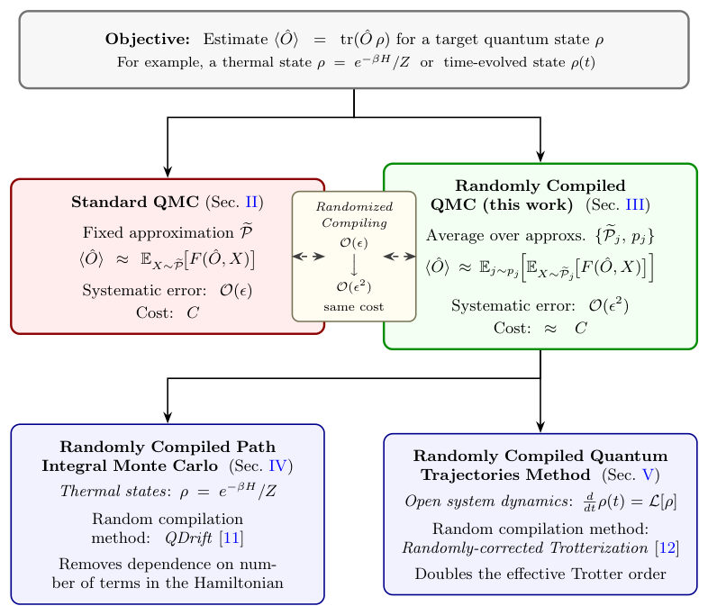
<figcaption class="paper-figure-caption"><b>Fig 1.</b> FIG. 1. Overview of the randomly compiled QMC (RC-QMC) framework. Standard QMC algorithms estimate an observable ⟨ˆO⟩by averaging an estimator function F( ˆO, X) over a random variable X sampled from a fixed approximate distribution eP (see Eq. (4)), incurring systematic error O(ϵ). RC-QMC instead averages over a collection of approximate distributions { ePj} weighted by probabilities pj (see Eq. (17)), which suppresses the systematic error to O(ϵ2) at essentially the same computational cost. This improvement is demonstrated in two settings: Randomly Compiled Path Integral Monte Carlo for thermal state estimation, where QDrift replaces the standard Trotter decomposition and eliminates the...</figcaption>
</figure>
<figure class="paper-figure-card">

<figcaption class="paper-figure-caption"><b>Fig 2.</b> FIG. 2. (Left) Standard path integral Monte Carlo on 3 sites: Trotterization is used to decompose e−βH into a product of evolution under the potential (V ) and kinetic (T) energies, and particle positions take values ±1 in the σz basis at each time step k. The particle paths are then aggregated into an array X, indexed by site i and time step k. The dashed orange line depicts the mapping of a single time step to a particle configuration in X. (Right) Randomly compiled path integral Monte Carlo on 3 sites: individual potential (V) and kinetic (T ) energy terms are sampled according to QDrift, and a particle’s position can change only when its corresponding kinetic term is sampled. The paths...</figcaption>
</figure>
<figure class="paper-figure-card">

<figcaption class="paper-figure-caption"><b>Fig 3.</b> FIG. 3. Comparison of error in the observable ⟨ˆV ⟩between standard path integral Monte Carlo (using 2nd-order Trotterization) and randomly compiled path integral Monte Carlo (using symmetric and asymmetric approaches), where the error has been defined relative to the continuum limit of the standard algorithm (denoted ⟨ˆV ⟩cont). Inner error bars for the randomly compiled methods denote the MCMC sampling errors within QDrift sequences, and outer error bars are the total error estimate including the variance due to averaging over different QDrift sequences (as described in Appendix I). Continuum limit extrapolated values are shown at slightly negative offset values for clarity. a): Here the...</figcaption>
</figure>
<figure class="paper-figure-card">
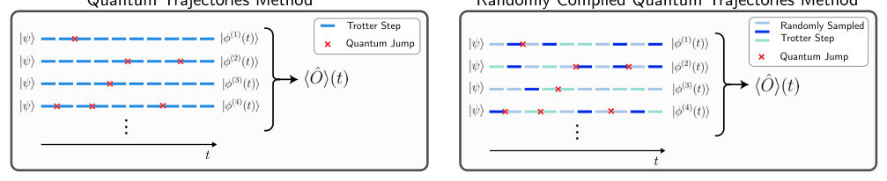
<figcaption class="paper-figure-caption"><b>Fig 4.</b> FIG. 4. An illustration of the quantum trajectories method (left), and the randomly compiled quantum trajectories method (right). Here, pure state trajectories are simulated by time-evolving an initial state |ψ⟩using Trotterization (denoted by blue rectangles), with intermediate quantum jumps applied randomly (denoted by red crosses). In the standard algorithm, each Trotter step is taken to be the same approximation. In the randomly compiled algorithm, each Trotter step is randomly sampled from a set of approximations. At the end of evolution, the trajectories are aggregated together to estimate an observable ⟨ˆO⟩(t) according to Eqs. (13) and (38).</figcaption>
</figure>
<figure class="paper-figure-card">
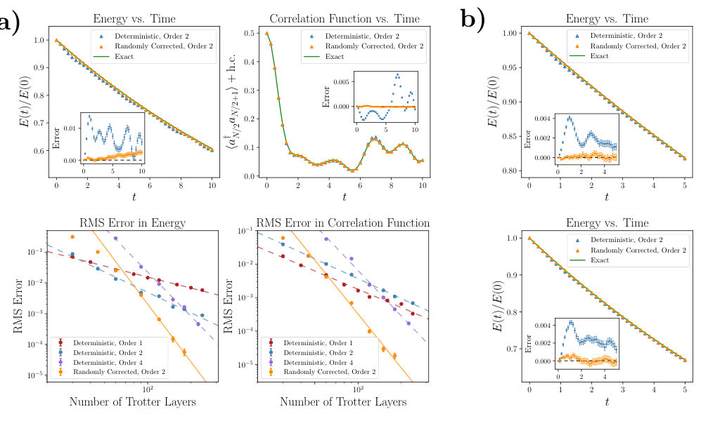
<figcaption class="paper-figure-caption"><b>Fig 5.</b> FIG. 5. Comparison between the standard (deterministic) and randomly compiled quantum trajectories methods applied to the dissipative Bose-Hubbard model. a): Simulations conducted on N = 10 spins with dissipation rate γ = 0.05, using Trotterization of various orders. We illustrate the time series for energy and the correlation function ⟨a† N/2aN/2+1⟩+ h.c. at a fixed number of Trotter steps (r = 40) (top), and the corresponding RMS error as a function of computational cost (bottom). b): Simulations conducted on N = 30 spins with dissipation rates γ = 0.04 (top) and γ = 0.08 (bottom), using 2nd-order Trotterization. Here we illustrate the time series for energy at a fixed number of Trotter...</figcaption>
</figure>
</div>

<p><strong>Summary.</strong> This paper introduces Randomly Compiled Quantum Monte Carlo (RC-QMC), a general framework designed to suppress systematic errors in QMC simulations by averaging over multiple approximations. By leveraging principles from randomized compiling, the method achieves a significant accuracy boost (e.g., from $O(\epsilon)$ to $O(\epsilon^2)$) for calculating thermal and time-dependent quantum expectation values with minimal added computational cost.</p>
<p><strong>Why it may be interesting.</strong> This work provides a general, systematic algorithmic improvement for simulating complex quantum dynamics, which is highly relevant for researchers working on open quantum systems or many-body physics where systematic errors from time-stepping or approximation schemes are major bottlenecks.</p>
<details>
<summary>Detailed structure</summary>
<p><strong>Main problem.</strong> The primary goal is to improve the accuracy and efficiency of Quantum Monte Carlo (QMC) simulations by mitigating systematic errors inherent in fixed approximations.</p>
<p><strong>Main result.</strong> The proposed Randomly Compiled QMC (RC-QMC) framework suppresses systematic errors from $O(\epsilon)$ to $O(\epsilon^2)$ while maintaining computational costs comparable to standard QMC methods.</p>
<p><strong>Method.</strong> The authors introduce RC-QMC, which averages over a family of approximations derived from randomized compiling principles, applying this to standard QMC techniques like Path Integral QMC and quantum trajectory simulations.</p>
<p><strong>Model / system.</strong> The methods are applied to general quantum systems, including estimating thermal states ($
ho = e^{-eta H}/Z$) and simulating open system dynamics governed by the Lindblad master equation.</p>
<p><strong>Key observables.</strong> Expectation values $\langle \hat{O} 
angle = 	ext{tr}(\hat{O}
ho)$, thermal expectation values, and time-dependent observables for open systems.</p>
<p><strong>Important parameters / regimes.</strong> Systematic error scaling ($\epsilon$ vs $\epsilon^2$), computational cost ($C$), inverse temperature ($eta$), and time step ($\Delta t$).</p>
<p><strong>Assumptions / limitations.</strong> RC-QMC only mitigates systematic error, not statistical sampling errors or the sign problem. The analysis relies on bounding errors in the 1-norm.</p>
<p><strong>Figures summary.</strong> Figures compare standard QMC (Systematic error $O(\epsilon)$, Cost $C$) against RC-QMC (Systematic error $O(\epsilon^2)$, Cost $\approx C$). Other figures illustrate the error reduction in Trotterization and the interpolating sequence used in the error proof.</p>
<p><strong>Paper structure.</strong> The paper establishes the general QMC framework, identifies the sources of systematic error, introduces RC-QMC via randomized compiling, and then applies and proves the advantage of this framework for specific physical problems like PIMC and open system dynamics.</p>
</details>
<details>
<summary>Abstract</summary>
<p>Quantum Monte Carlo (QMC) algorithms are among the most powerful classical methods for simulating quantum systems, yet their accuracy is often limited by the systematic errors in the approximations used, such as Trotterization. Here we introduce randomly compiled quantum Monte Carlo (RC-QMC) as a general framework that suppresses these systematic errors by averaging over a family of approximations rather than relying on a single fixed one. This strategy is grounded in the concept of randomized compiling from quantum computing, which suppresses errors by sampling over quantum gates, at essentially no additional computational cost. Consequently, our framework achieves a computational advantage over standard QMC methods when estimating a target state to a desired level of accuracy. We illustrate this advantage on two key Monte Carlo algorithms: (1) path integral quantum Monte Carlo for estimating thermal states, and (2) the quantum trajectories method for simulating open system dynamics. In aggregate, these results represent a cross-fertilization of quantum and classical algorithms, are readily generalizable to other QMC methods, and suggest wider applications in classical simulation.</p>
</details>
<p><sub><a href="#top">↑ back to top</a></sub></p>

<p><a id="paper-2609.10510"></a></p>
<h3 id="phase-transitions-in-first-detection-statistics-of-monitored-long-range-quantum-walks">⭐ <a href="http://arxiv.org/abs/2609.10510v1">Phase transitions in first-detection statistics of monitored long-range quantum walks</a></h3>
<p><strong>Highlighted author(s):</strong> Giovanna Morigi<br>
<strong>Authors:</strong> Sayan Roy, Shamik Gupta, Giovanna Morigi, Gabriele Perfetto<br>
<strong>Type:</strong> theory · <strong>Category:</strong> statistical mechanics · <strong>PDF:</strong> <a href="https://arxiv.org/pdf/2609.10510v1">https://arxiv.org/pdf/2609.10510v1</a><br>
<strong>Analysis basis:</strong> full PDF text, analyzed in chunks
<strong>Topic relevance:</strong> 🔥 <code>quantum measurements</code> <strong>4/5</strong> · <code>driven-dissipative phase transition</code> <strong>3/5</strong> · <code>non-equilibrium universality</code> <strong>3/5</strong> · <code>Full counting statistics</code> <strong>1/5</strong> · <code>Keldysh / 2PI / non-Gaussian methods</code> <strong>1/5</strong> · <code>correlated / nonlocal dissipation</code> <strong>1/5</strong> · <code>methods for driven-dissipative</code> <strong>1/5</strong></p>
<div class="figure-strip-hint">↔ Scroll figures horizontally</div>
<div class="paper-figures-scroll">
<figure class="paper-figure-card">
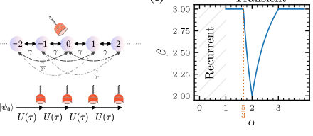
<figcaption class="paper-figure-caption"><b>Fig 1.</b> FIG. 1. (a) A walker coherently hops along a ring with hopping amplitude decaying as d−α with the distance d. (b) A detector monitors stroboscopically the initial site |0⟩, a positive detection event terminates the dynamics. We show that the first-detection probability decays algebraically as Fn ∼n−β, where β depends critically on α, as visible in (c), identifying different regimes of the transient quantum walk. The nonanalytic points at α = 1, 2, 3 reflect a phase transition in the spectrum of the long-range model. Instead, the nonanalytic point at α = 5/3 is due to the projective effect of measurements.</figcaption>
</figure>
<figure class="paper-figure-card">
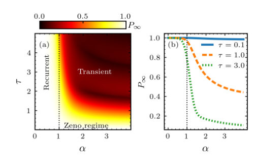
<figcaption class="paper-figure-caption"><b>Fig 2.</b> FIG. 2. Recurrent to transient transition. (a) Density plot of the total detection probability P∞= P</figcaption>
</figure>
<figure class="paper-figure-card">

<figcaption class="paper-figure-caption"><b>Fig 3.</b> FIG. 3. Long-time algebraic decay in the transient phase. Log-log plot of the first-detection probability Fn as a function of number of measurement n. The panels correspond to different regimes of hopping exponent (a) 2 &lt; α &lt; 3 with α = 2.4, (b) 5/3 ≤α &lt; 2 with α = 1.8 and (c) 1 &lt; α ≤5/3 with α = 1.5. Blue triangles represent the result from exact numerical evaluations based on the quantum renewal equation with N = 106, γ = 1, τ = 1. Orange circles represent the corresponding theoretical predictions for the long-time asymptotics. Black dashed lines are obtained from numerical fitting according to the power-law model indicated in the corresponding panel.</figcaption>
</figure>
</div>

<p><strong>Summary.</strong> This work investigates how monitoring a quantum walker causes phase transitions in its return statistics based on the long-range hopping exponent $\alpha$. It establishes that $\alpha=1$ marks the transition between localized (recurrent) and spreading (transient) quantum walks. The decay rate of the detection probability is highly sensitive to $\alpha$, revealing interference effects between different energy modes.</p>
<p><strong>Why it may be interesting.</strong> The study connects measurement back-action (non-unitary dynamics) to fundamental critical phenomena, providing an experimentally tunable mechanism to probe spectral properties via quantum walks.</p>
<details>
<summary>Detailed structure</summary>
<p><strong>Main problem.</strong> The paper characterizes the phase transitions governing the First-Detection Return Probability (FDRP) of quantum walks when the walker is monitored by a detector.</p>
<p><strong>Main result.</strong> The long-range hopping exponent $\alpha$ critically determines the walk's behavior, separating recurrent ($\alpha < 1$) from transient ($\alpha > 1$) regimes via a continuous phase transition.</p>
<p><strong>Method.</strong> The analysis uses generating functions and asymptotic analysis of the Loschmidt amplitude, distinguishing between contributions from infrared (IR) and ultraviolet (UV) energy modes.</p>
<p><strong>Model / system.</strong> The model is a quantum walker on a chain undergoing unitary evolution interrupted by projective measurements (monitoring). The hopping strength decays as $d^{-\alpha}$, controlled by the exponent $\alpha$.</p>
<p><strong>Key observables.</strong> First-Detection Return Probability ($F_n$), Total detection probability ($P_\infty$), and the decay exponent $\beta(\alpha)$ of $F_n \sim n^{-\beta}$.</p>
<p><strong>Important parameters / regimes.</strong> The hopping exponent $\alpha$, which dictates the transition point at $\alpha=1$.</p>
<p><strong>Assumptions / limitations.</strong> The analysis relies on the continuum limit and the asymptotic behavior derived from the generating function, assuming distinct branch points except at resonant times.</p>
<p><strong>Figures summary.</strong> Figures illustrate how $\alpha$ controls the walk's nature, showing the phase boundary at $\alpha=1$ for $P_\infty$, and mapping the dependence of the decay exponent $\beta$ on $\alpha$.</p>
<p><strong>Paper structure.</strong> The paper systematically analyzes the FDRP using the quantum renewal equation, deriving asymptotic forms for the Loschmidt amplitude in different $\alpha$ regimes, and mapping out the resulting decay laws for $F_n$ across various critical points.</p>
</details>
<details>
<summary>Abstract</summary>
<p>In a quantum walk, the first-detection return probability (FDRP) characterizes salient features, determining whether the quantum walk is transient or recurrent. We study the FDRP of quantum walks on a chain where the initial site is stroboscopically monitored by a detector and the walker performs long-range hopping between sites. We assume that the hopping strength decays with the distance $d$ as $d^{-α}$ and $α\geq 0$ and show that the power-law exponent $α$ critically determines the behavior of the FDRP. The value $α=1$ separates recurrent ($α<1$) from transient ($α>1$) quantum walks through a continuous phase transition in the total detection probability. For $α<1$, strong long-range hopping induces localization, resulting in unit total detection probability. Instead, for $α>1$ the long-range walk is transient and the return probability decays algebraically as a function of time as $t^{-β}$. The associated decay exponent $β$ features nonanalytic points as a function of $α$. Such singularities are not exclusively determined by the low-energy spectrum, but are caused by the interference between infrared and ultraviolet energy modes induced by projective measurements, signalling the emergence of critical behavior intrinsic to the non-unitary dynamics. These dynamics are solely controlled by tuning the long-range exponent $α$ and can thus be experimentally probed in atomic and molecular systems.</p>
</details>
<p><sub><a href="#top">↑ back to top</a></sub></p>

<p><a id="paper-2609.10062"></a></p>
<h3 id="non-equilibrium-dissipative-stabilization-of-s-and-d-wave-superconductivity">⭐ <a href="http://arxiv.org/abs/2609.10062v1">Non-equilibrium dissipative stabilization of s- and d-wave superconductivity</a></h3>
<p><strong>Highlighted author(s):</strong> Zala Lenarčič<br>
<strong>Authors:</strong> Aleksey Lunkin, Yury Holubeu, Denis Golež, Zala Lenarčič<br>
<strong>Type:</strong> theory · <strong>Category:</strong> statistical mechanics · <strong>PDF:</strong> <a href="https://arxiv.org/pdf/2609.10062v1">https://arxiv.org/pdf/2609.10062v1</a><br>
<strong>Analysis basis:</strong> full PDF text, analyzed in chunks
<strong>Topic relevance:</strong> <code>driven-dissipative phase transition</code> <strong>3/5</strong> · <code>methods for driven-dissipative</code> <strong>3/5</strong> · <code>non-equilibrium universality</code> <strong>3/5</strong> · <code>Keldysh / 2PI / non-Gaussian methods</code> <strong>2/5</strong> · <code>correlated / nonlocal dissipation</code> <strong>1/5</strong> · <code>quantum measurements</code> <strong>1/5</strong></p>
<div class="figure-strip-hint">↔ Scroll figures horizontally</div>
<div class="paper-figures-scroll">
<figure class="paper-figure-card">

<figcaption class="paper-figure-caption"><b>Fig 1.</b> FIG. 1. Steady-state gap ∆∞(in units of zero temperature gap ∆0) as a function of temperatures of the first bath T1 and second bath T2. For an s-wave superconductor, we find new non-equilibrium solutions at T1 ̸= T2 with finite gap despite one of the baths being at a temperature larger than the critical temperature Tc in the equilibrium. The olive line represents the second-order phase-transition line.</figcaption>
</figure>
<figure class="paper-figure-card">

<figcaption class="paper-figure-caption"><b>Fig 2.</b> FIG. 2. Steady-state gap as a function of temperatures of the first bath T1 and second bath T2 for an s-wave supercon- ductor with strong inherent scattering γ1 ≈γ0, leading to a steady state well described by a temperature determined by the stationarity of energy, Eq. (12).</figcaption>
</figure>
<figure class="paper-figure-card">

<figcaption class="paper-figure-caption"><b>Fig 3.</b> FIG. 3. Different steady state distribution of quasiparticles at the bath temperatures T1/Tc = 0.6 and T2/Tc = 1.2. Red curve (GGE) corresponds to the non-equilibrium steady state, stabilized by the interplay of the two baths, Eq (9). Dashed line (GE) represents the thermal occupation obtained from the energy rate equation (12) in case of strong inherent scat- tering γ1 ∼γ0. The blue and green curves correspond to thermal distributions at the temperatures of the two baths, reached if system would be coupled to only one of them.</figcaption>
</figure>
<figure class="paper-figure-card">
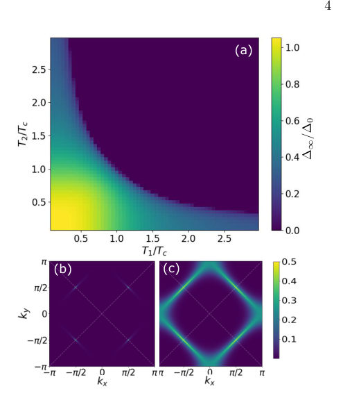
<figcaption class="paper-figure-caption"><b>Fig 4.</b> FIG. 4. (a) Steady-state gap ∆∞/∆0 as a function two tem- perature baths T1 and T2 for d-wave superconductor. Dis- tribution of quasiparticles in the equilibrium at T1/Tc = T2/Tc = 0.1 (b), and in the steady state with T1/Tc = 1.7 and T2/Tc = 0.3 (c).</figcaption>
</figure>
<figure class="paper-figure-card">
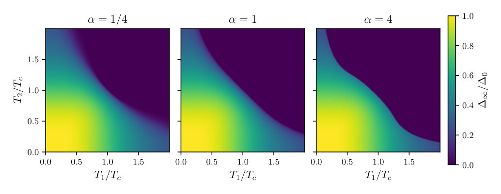
<figcaption class="paper-figure-caption"><b>Fig 5.</b> FIG. 5. Dependence of the steady state gap on the relative strength α = α+−/(α++ + α−−) of scattering and two-particle creation/annihilation term for the s-wave pairing case. Results for α = 1/4, 4 are comparable to the α = 1 considered in the main text, emphasising that our results are not fine tuned to a specific choice of α.</figcaption>
</figure>
</div>

<p><strong>Summary.</strong> This work explores stabilizing superconductivity in non-equilibrium steady states by coupling a BCS superconductor to two baths at potentially different temperatures. By solving the master equation using a Generalized Gibbs Ensemble, the authors show that the superconducting gap can remain finite even when one bath is super-critical. This highlights a powerful method for engineering quantum phases using controlled dissipation.</p>
<p><strong>Why it may be interesting.</strong> The use of non-equilibrium steady states to engineer quantum phases is a key topic in open quantum systems, providing a concrete example of how thermal baths can be utilized beyond simple thermalization.</p>
<details>
<summary>Detailed structure</summary>
<p><strong>Main problem.</strong> The paper investigates how to stabilize superconducting states beyond their equilibrium critical temperatures by coupling the system to two distinct thermal baths.</p>
<p><strong>Main result.</strong> A finite superconducting order parameter can be maintained even when one bath is at a temperature above the equilibrium critical temperature, demonstrating non-equilibrium stabilization.</p>
<p><strong>Method.</strong> The analysis employs the Generalized Gibbs Ensemble (GGE) approach, solving self-consistency equations derived from the Lindblad master equation governing quasiparticle occupation numbers.</p>
<p><strong>Model / system.</strong> The system is a BCS superconductor (s- and d-wave) coupled to two thermal baths ($T_1, T_2$). The dynamics are modeled using a Lindblad master equation and solved via time propagation or steady-state self-consistency.</p>
<p><strong>Key observables.</strong> The superconducting order parameter (gap function, $\Delta$), and the steady-state quasiparticle occupation numbers ($n_{p,\sigma}$).</p>
<p><strong>Important parameters / regimes.</strong> Bath temperatures ($T_1, T_2$), coupling strengths ($\gamma_0$), and the imbalance parameter $\alpha$.</p>
<p><strong>Assumptions / limitations.</strong> The primary assumption is the validity of the GGE Ansatz, which assumes quasiparticles are well-defined on intermediate timescales.</p>
<p><strong>Figures summary.</strong> Figures demonstrate the finite steady-state gap ($\Delta_\infty$) for s-wave superconductors when $T_1 
eq T_2$, and compare GGE predictions against thermal Gibbs Ensemble results.</p>
<p><strong>Paper structure.</strong> The paper progresses from setting up the non-equilibrium master equation and GGE ansatz, deriving the steady-state self-consistency equations, and finally analyzing the results for both s-wave and d-wave symmetries across varying bath temperatures and coupling parameters.</p>
</details>
<details>
<summary>Abstract</summary>
<p>Stabilizing superconductivity beyond its equilibrium regime has been one of the quests of nonequilibrium state engineering. We report the presence of nonthermal pairing gap in BCS superconductors coupled to two thermal baths, where one of the baths can be at a temperature well above the equilibrium $T_c$. Superconducting state is enabled by a highly non-equilibrium steady state stabilized by weak coupling to baths that break detailed balance condition. The steady-state is well described by a generalized Gibbs ensemble parametrized with chemical potentials for associated Bogoliubov quasiparticle. A strong, non-perturbative effect is reported for both $s$-wave and $d$-wave superconductors, and its possible realization in cavity-based experiments is discussed.</p>
</details>
<p><sub><a href="#top">↑ back to top</a></sub></p>

<p><a id="paper-2609.09296"></a></p>
<h3 id="distinguishability-transitions-from-global-quantum-snapshots">⭐ <a href="http://arxiv.org/abs/2609.09296v1">Distinguishability Transitions from Global Quantum Snapshots</a></h3>
<p><strong>Highlighted author(s):</strong> Sarang Gopalakrishnan<br>
<strong>Authors:</strong> Catherine McCarthy, Sarang Gopalakrishnan, Romain Vasseur<br>
<strong>Type:</strong> theory · <strong>Category:</strong> statistical mechanics · <strong>PDF:</strong> <a href="https://arxiv.org/pdf/2609.09296v1">https://arxiv.org/pdf/2609.09296v1</a><br>
<strong>Analysis basis:</strong> full PDF text, analyzed in chunks
<strong>Topic relevance:</strong> <code>quantum measurements</code> <strong>3/5</strong></p>
<div class="figure-strip-hint">↔ Scroll figures horizontally</div>
<div class="paper-figures-scroll">
<figure class="paper-figure-card">

<figcaption class="paper-figure-caption"><b>Fig 1.</b> FIG. 1. Left: Protocol for distinguishing k random states with m global snapshots. In this setup, an observer is presented with m copies of a random state |ψα⟩with α ∈{0, . . . , k −1} and provided with exact knowledge of all k states. After measuring each site of each of the m copies in the computational basis to obtain a set of bitstrings {⃗mi}, the observer queries a decoder in order to guess the label α. Here we take the decoder to be an optimal Bayesian classifier that outputs the label α associated with the largest probability p({⃗mi}|ψα), where p({⃗mi}|ψj) is computed for all j ∈{0, . . . , k −1} from the Born probabilities associated with the bitstrings {⃗mi}. Right: Decoder success...</figcaption>
</figure>
<figure class="paper-figure-card">

<figcaption class="paper-figure-caption"><b>Fig 2.</b> FIG. 2. Success probability Ps(σ, N) of decoding an N- qubit random state subject to random coherent errors act- ing on each site j as Uj = e−iϵjXj, where ϵj are indepen- dently drawn from a Gaussian distribution of variance σ2. The success probability decays towards 1/2 for large values of σN 1/2. Inset: for a state under a global depolarizing channel of strength p, the decoder success probability takes the form Ps(p) = (3 −p)/4.</figcaption>
</figure>
<figure class="paper-figure-card">

<figcaption class="paper-figure-caption"><b>Fig 3.</b> FIG. 3. Top: onset of anti-concentration in finite-depth Clifford circuits. The decoder success probability Ps(t, N) decays from one to the expected value for random Clifford circuits Ps(t →∞, N) = 2/3 as the depth t of the circuit is increased. The curves for different system sizes collapse neatly when rescaling by t/ ln(N), indicating that anti-concentration sets in on logarithmic timescales. Bottom: The success prob- ability of an RMPO displays z/η scaling with η the rescaled noise strength in the small-z (deep) limit, and is indepen- dent of η in the large-z (shallow) limit (inset). The scaling in these two regimes is consistent with behavior seen in the linear XEB.</figcaption>
</figure>
<figure class="paper-figure-card">
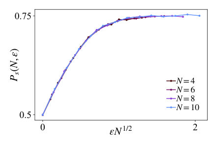
<figcaption class="paper-figure-caption"><b>Fig 4.</b> FIG. 4. Success probability of phase-random states measured in a basis defined by the rotation U = N</figcaption>
</figure>
</div>

<p><strong>Summary.</strong> This work analyzes how effectively one can distinguish between many random quantum states using limited global measurements. It establishes a precise phase transition governed by the ratio of shots to the logarithm of the number of states. The findings reveal that global measurements are surprisingly powerful, setting fundamental limits on quantum state distinguishability.</p>
<p><strong>Why it may be interesting.</strong> The concept of distinguishing quantum states via global measurements touches upon fundamental resource theories and information capacity, which has implications for quantum characterization and quantum metrology.</p>
<details>
<summary>Detailed structure</summary>
<p><strong>Main problem.</strong> The paper investigates the fundamental limits on distinguishing between a large number of random quantum states using only a small number of global measurement outcomes.</p>
<p><strong>Main result.</strong> A phase transition is identified in the distinguishability, controlled by the ratio $x = m/\ln k$, with a critical threshold $x_c = 1/(1-\gamma)$.</p>
<p><strong>Method.</strong> The analysis employs Bayesian classification theory, calculating the success probability $P_s$ by analyzing the exponential decay of the misclassification probability in the large-shot limit.</p>
<p><strong>Model / system.</strong> The model involves $k$ candidate quantum states, $|\psi_\alpha
angle$, assumed to be Haar-random or generated by random quantum circuits. Measurements are restricted to the computational basis, yielding global snapshots.</p>
<p><strong>Key observables.</strong> Success probability ($P_s$) of the Bayesian decoder, and the critical scaling variable $x = m/\ln k$.</p>
<p><strong>Important parameters / regimes.</strong> Number of states ($k$), number of shots ($m$), and the effective ratio $x = m/\ln k$.</p>
<p><strong>Assumptions / limitations.</strong> The analysis assumes the availability of a classical model to compute the Born probabilities $p(\vec{m}|\psi_\alpha)$ for the decoder. Specific results rely on the Haar-random state assumption or the structure of Clifford circuits.</p>
<p><strong>Figures summary.</strong> Figures illustrate the phase transition of $P_s$ vs. $x_{	ext{eff}}$, showing the transition at $x_c$. Other figures compare $P_s$ against circuit depth and noise parameters.</p>
<p><strong>Paper structure.</strong> The paper first establishes the general framework using Bayesian classifiers for distinguishing random states, deriving the critical scaling $m \sim \ln k$. It then extends this analysis to specific physical regimes, including low-depth, noisy, and phase-random circuits, deriving specific limiting values like $2/3$ for Clifford circuits.</p>
</details>
<details>
<summary>Abstract</summary>
<p>Quantum states generated by generic time evolution are locally featureless: local measurements return random outcomes that are identical for all states. However, global snapshots in the computational basis are surprisingly effective at distinguishing between quantum states. We explore the ability of Bayesian classifiers to discriminate between many random quantum states using a small number of measurement outcomes. We identify a phase transition in the ability of the classifier to distinguish between $k$ candidate states with $m$ shots controlled by the variable $x = m / \ln k$, and derive the threshold value $x_c$. We extend our results to low-depth circuits near the onset of anti-concentration, as well as to noisy circuits and phase-random states.</p>
</details>
<p><sub><a href="#top">↑ back to top</a></sub></p>

<p><a id="paper-2609.09464"></a></p>
<h3 id="prethermal-ripplons-in-quenched-binary-bose-einstein-condensates"><a href="http://arxiv.org/abs/2609.09464v1">Prethermal ripplons in quenched binary Bose-Einstein condensates</a></h3>
<p><strong>Authors:</strong> Yanda Geng, Stephen Eckel, Gretchen K. Campbell, Ian B. Spielman<br>
<strong>Type:</strong> both · <strong>Category:</strong> statistical mechanics · <strong>PDF:</strong> <a href="https://arxiv.org/pdf/2609.09464v1">https://arxiv.org/pdf/2609.09464v1</a><br>
<strong>Analysis basis:</strong> full PDF text, analyzed in chunks
<strong>Topic relevance:</strong> 🔥 <code>scars &amp; prethermalization</code> <strong>5/5</strong> · <code>analog quantum simulation</code> <strong>3/5</strong> · <code>driven-dissipative phase transition</code> <strong>3/5</strong> · <code>non-equilibrium universality</code> <strong>3/5</strong> · <code>Keldysh / 2PI / non-Gaussian methods</code> <strong>2/5</strong> · <code>methods for driven-dissipative</code> <strong>2/5</strong> · <code>Frenkel-Kontorova</code> <strong>1/5</strong> · <code>correlated / nonlocal dissipation</code> <strong>1/5</strong></p>
<div class="figure-strip-hint">↔ Scroll figures horizontally</div>
<div class="paper-figures-scroll">
<figure class="paper-figure-card">
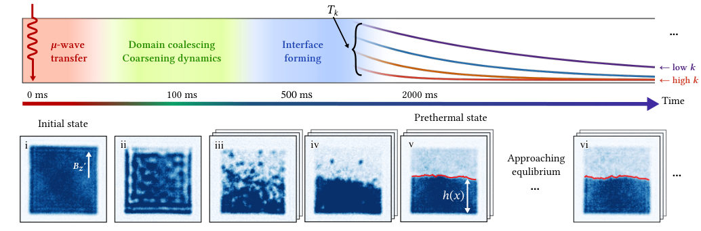
<figcaption class="paper-figure-caption"><b>Fig 1.</b> FIG. 1. The long road to equilibrium. A schematic illustration of the relaxation process (top) is shown along with representative spin-selective images of the |↑⟩density (bottom). (i) A microwave pulse at t = 0 transfers an initially spin-polarized BEC into an equal superposition of |↑⟩(dark blue) and |↓⟩. The orientation of a magnetic field gradient is indicated. (ii) Initial spin structure forms nearly deterministically; (iii) small initial fluctuations then seed random droplet patterns that coalesce and coarsen. (iv) After about 500 ms an interface forms and (v) becomes single-valued by 2000 ms (red curves). Ripplons with different wavenumber k combine to give the observed interface...</figcaption>
</figure>
<figure class="paper-figure-card">

<figcaption class="paper-figure-caption"><b>Fig 2.</b> FIG. 2. Fluctuations of a prethermal interface, with thold = 2.0 s. (a) PCA components of h(x) for n = 5, 9, 13, and 17. (b) Normalized PCA weights. (c) DCT amplitudes of each PCA component. (d) Power spectrum ⟨|hk|2⟩, measured at four bulk temperatures (vertically offset for clarity) using ≈70 experimental realizations per temperature, plotted along with the corresponding equilibrium prediction (no free parameters).</figcaption>
</figure>
<figure class="paper-figure-card">
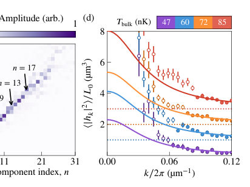
<figcaption class="paper-figure-caption"><b>Fig 3.</b> Figure 3(b) extends this analysis over the full range of k and for hold times 1 s to 4 s. The resulting Tk val- ues show that only high-k ripplon modes equilibrate with the bulk; at low-k, the mode temperatures exceed Tbulk and we empirically find that excessive temperature is well described by a power-law (Tk−Tbulk)/T0 = k−α, with ex- ponent α = 1.42(5) and prethermal temperature scale T0; the resulting data-collapse is shown in Fig. 3(b). These low-k modes decay extremely slowly, with a 5(1) s mea- sured decay time—much slower than the ∼10−1 s equi- libration timescale of the phonon bath, highlighting the prethermal nature of the interface system. The excess low-k occupation and slow...</figcaption>
</figure>
<figure class="paper-figure-card">
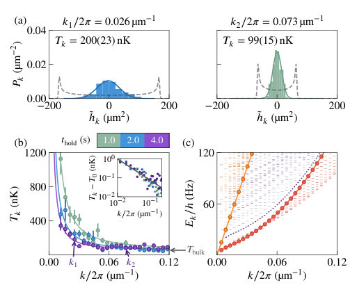
<figcaption class="paper-figure-caption"><b>Fig 4.</b> FIG. 3. Distribution functions and equilibration at Tbulk = 56 nK. (a) PDFs Pk for k1/(2π) = 0.026 µm−1 and k2/(2π) = 0.073 µm−1 at thold = 4 s. The histograms plot experi- mental data with corresponding normal distributions (solid curves). Dashed curves show the PDF corresponding to a phase-averaged ripplon coherent state with the same ripplon occupation. (b) Mode temperature as a function of k for three hold times. Solid curves show power-law fits with a common exponent and offset. Inset: log-log plot in terms of dimension- less quantities ¯Tk and ¯k showing data collapse. (c) Scattering processes in our L0 × L0 box. Circles connected by curves plot the energy of ripplons (red) and...</figcaption>
</figure>
<figure class="paper-figure-card">
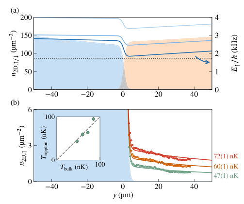
<figcaption class="paper-figure-caption"><b>Fig 5.</b> FIG. 4. Minority thermal atom thermometry. (a) Effective potentials for thermal spin-↑atoms in the lowest three local transverse modes (solid curves), compared with the chemi- cal potential µ↑(dotted line). The shaded curves plot the condensate densities n↑/↓in blue/yellow respectively. (b) Spin-↑density profiles. Markers plot the measured total den- sity (thermal plus condensed) along with fits (solid curve) to our theoretical model, yielding the annotated temperatures. The shaded region shows the computed condensate density and highlights its vast difference in scale. Inset: Tbulk versus Tripplon obtained by fitting the high-k ripplon tail in Fig. 2(d) using Eq. (2) with Tripplon as the...</figcaption>
</figure>
</div>

<p><strong>Summary.</strong> This work experimentally and theoretically examines prethermalization in the ripplons at the interface of two immiscible BECs. The authors demonstrate that the system enters a long-lived non-equilibrium state where low-momentum excitations retain excess energy relative to the bulk thermal bath. This behavior is attributed to kinematic isolation, highlighting the importance of conservation laws in determining relaxation pathways.</p>
<p><strong>Why it may be interesting.</strong> It provides a clean, experimentally verifiable platform (BEC interfaces) to study fundamental non-equilibrium dynamics, offering insights into energy relaxation mechanisms beyond simple thermalization assumptions.</p>
<details>
<summary>Detailed structure</summary>
<p><strong>Main problem.</strong> The paper investigates how far-from-equilibrium quantum systems, such as interfacial waves in BECs, approach thermal equilibrium, focusing on the phenomenon of prethermalization.</p>
<p><strong>Main result.</strong> Low-momentum ripplon modes exhibit long-lived prethermal states with elevated temperatures, decoupled from the bulk phonon bath due to kinematic isolation, while high-momentum modes thermalize rapidly.</p>
<p><strong>Method.</strong> The study combines theoretical modeling using Hamiltonian derivations (Bogoliubov formalism) with experimental measurements of time-evolving interface height profiles and mode temperature diagnostics.</p>
<p><strong>Model / system.</strong> The system is a 1D interface between immiscible 2D Bose-Einstein condensates (BECs). The dynamics are governed by ripplon excitations, which are analyzed using a Hamiltonian derived from continuum limits of coupled oscillators.</p>
<p><strong>Key observables.</strong> Interface height profile $h(x)$, power spectral density $\langle|h_k|^2
angle$, and mode temperatures $T_k$ derived from minority spin atom thermometry.</p>
<p><strong>Important parameters / regimes.</strong> Interfacial tension ($\sigma$), capillary length ($\xi$), and the ratio of low-momentum to high-momentum mode relaxation timescales.</p>
<p><strong>Assumptions / limitations.</strong> The analysis assumes the applicability of the equipartition theorem for thermal equilibrium and relies on the concept of kinematic isolation due to the absence of specific energy- and momentum-conserving relaxation processes.</p>
<p><strong>Figures summary.</strong> Figures illustrate the relaxation process from initial quench to prethermal state, compare measured and predicted power spectra, and show probability density functions (PDFs) confirming Gaussian behavior for individual modes.</p>
<p><strong>Paper structure.</strong> The paper first derives the Hamiltonian for the ripplon field, then analyzes the relaxation dynamics, showing that high-k modes thermalize quickly while low-k modes remain trapped in a non-equilibrium, prethermal state.</p>
</details>
<details>
<summary>Abstract</summary>
<p>Prethermal states--long-lived quasi-equilibrium configurations--occur in a wide range of physical systems that exhibit fast dephasing or reconfiguration followed by slow relaxation towards thermal equilibrium. We experimentally studied the 1D interface between immiscible 2D Bose-Einstein condensates (BECs); following a quench, the interfacial capillary waves (ripplons) quickly relaxed into a long-lived prethermal state characterized by a persistent non-equipartition of energy, evoking the classic Fermi-Pasta-Ulam-Tsingou problem. We directly measured the interface's height profile as it evolved in time, identified the contribution of individual ripplon modes, and find that, though their individual amplitudes are thermally distributed, they are not in thermal equilibrium--high-momentum modes rapidly equilibrated with the bulk phonon modes of the 2D BEC, while lower momentum modes remained at elevated temperatures, forming a long-lived prethermal configuration for the whole system. We attribute this to kinematic isolation: the absence of energy- and momentum-conserving relaxation processes in our system at ultracold temperature.</p>
</details>
<p><sub><a href="#top">↑ back to top</a></sub></p>

<p><a id="paper-2609.09733"></a></p>
<h3 id="fractional-chern-insulators-in-twisted-bilayer-optical-lattices"><a href="http://arxiv.org/abs/2609.09733v1">Fractional Chern Insulators in Twisted Bilayer Optical Lattices</a></h3>
<p><strong>Authors:</strong> Yan-Bin Yang, Jiong-Hao Wang, Shicheng Ma, Yong Xu<br>
<strong>Type:</strong> theory · <strong>Category:</strong> quantum gases · <strong>PDF:</strong> <a href="https://arxiv.org/pdf/2609.09733v1">https://arxiv.org/pdf/2609.09733v1</a><br>
<strong>Analysis basis:</strong> full PDF text, analyzed in chunks
<strong>Topic relevance:</strong> 🔥 <code>analog quantum simulation</code> <strong>5/5</strong></p>
<div class="figure-strip-hint">↔ Scroll figures horizontally</div>
<div class="paper-figures-scroll">
<figure class="paper-figure-card">
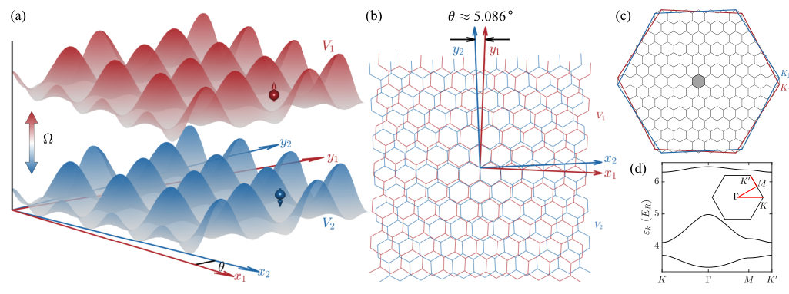
<figcaption class="paper-figure-caption"><b>Fig 1.</b> FIG. 1. The schematics of twisted bilayer optical lattices composed of two spin-dependent honeycomb lattices relatively rotated by a twist angle θ. (a) The optical potential profiles V1(r) and V2(r) felt by two spin states |↑⟩, |↓⟩simulating the two layers. The two spin states are coupled by a microwave field with the Rabi frequency Ωsimulating interlayer tunneling. (b) The moir´e lattice structure in real space with the rotation axis placed at a sublattice site. (c) The moir´e reciprocal lattice in momentum space. The grey area denotes a moir´e Brillouin zone. K↑and K↓are the high-symmetry momenta of bare BZs for two spin states, respectively. Here, we set the twist angle to a commensurate...</figcaption>
</figure>
<figure class="paper-figure-card">
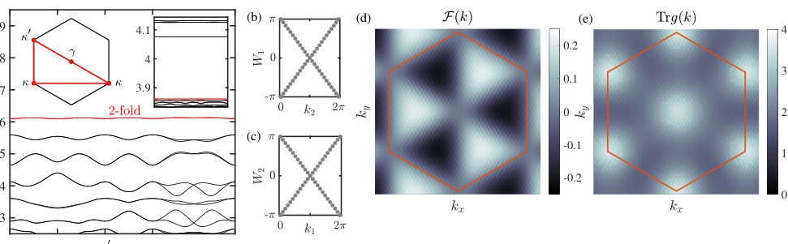
<figcaption class="paper-figure-caption"><b>Fig 2.</b> FIG. 2. The single-particle band properties. (a) The moir´e band structure along high-symmetry lines in moir´e BZ. The inset shows the band structure in a larger energy range. The red lines highlight two-fold quasi-degenerate bands with narrow band dispersion below a large gap. (b,c) The Wilson loop spectra of the two nearly flat bands along two reciprocal basis vectors. (d,e) The distribution of the Berry curvature F(k) and the trace of quantum metric Trg(k) of the flat-band subspace over the moir´e BZ. Here, both Trg(k) and F(k) are multiplied by a factor of SBZ/(2π) (SBZ is the area of the moir´e BZ).</figcaption>
</figure>
<figure class="paper-figure-card">

<figcaption class="paper-figure-caption"><b>Fig 3.</b> FIG. 4. (a) The many-body energy spectrum obtained from ED for U = 1. The ground-state manifold has three-fold de- generacy with the total momenta (indexed by K) predicted by the generalized Pauli principle. (b) The particle entanglement spectrum of the ground states of N = 8 with a subsystem of NA = 3 particles. There are 1088 states below a entangle- ment gap denoted by the dashed line, in agreement with the counting of (1, 3) generalized Pauli principle. We perform the ED calculation for a system size of (N1, N2) = (4, 6).</figcaption>
</figure>
<figure class="paper-figure-card">
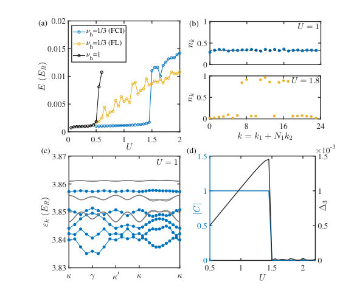
<figcaption class="paper-figure-caption"><b>Fig 4.</b> FIG. 3. (a) The ground-state energy from ED (subtracted by a constant for clarity) with respect to the interaction strength U for three different HF ansatz: fractional-Chern-insulator (FCI) ansatz, Fermi-liquid (FL) ansatz, and integer filling ansatz. (b) The occupation of mean-field states in momentum space for the ground state of the ansatz with lowest energy. (c) The mean-field band structure along high-symmetry lines obtained from SCHF calculation for U = 1 using the FCI ansatz. For comparison, the bare dispersion is plotted as grey lines. (d) The absolute value of Chern number (blue line) of the isolated mean-field band from SCHF and the many-body gap ∆3 = E4 −E3 (black line) from ED...</figcaption>
</figure>
</div>

<p><strong>Summary.</strong> This theoretical study explores the possibility of realizing a fractional Chern insulator using cold atoms in twisted bilayer optical lattices. By incorporating atomic interactions into the model, the authors show that the system can develop a non-trivial Chern band, leading to a predicted FCI phase. This work highlights the potential of highly tunable optical lattice systems to host strongly correlated topological matter.</p>
<p><strong>Why it may be interesting.</strong> This work directly bridges the gap between ultracold atomic physics (cold atoms in optical lattices) and advanced condensed matter topological physics (FCIs), providing a highly tunable platform for realizing exotic quantum states.</p>
<details>
<summary>Detailed structure</summary>
<p><strong>Main problem.</strong> The study investigates the theoretical realization of strongly correlated topological phases, specifically the fractional Chern insulator (FCI), within cold atoms trapped in twisted bilayer optical lattices.</p>
<p><strong>Main result.</strong> The authors demonstrate that atomic interactions can induce a non-zero Chern number in the mean-field description, leading to a predicted fractional Chern insulator phase at fractional filling.</p>
<p><strong>Method.</strong> The research employs a combination of single-particle band structure calculations, self-consistent Hartree-Fock (SCHF) approximations, and exact diagonalization (ED) for the many-body problem.</p>
<p><strong>Model / system.</strong> The system is cold atoms confined in a twisted bilayer optical lattice, modeled by a Hamiltonian incorporating single-particle hopping and an interspin contact interaction. The lattice geometry is defined by a specific, small twist angle.</p>
<p><strong>Key observables.</strong> Chern number, Berry curvature, quantum geometric tensor, many-body gap ($\Delta_3$), and particle entanglement spectrum (PES).</p>
<p><strong>Important parameters / regimes.</strong> Interaction strength ($U$), fractional filling ($
u$), and the specific commensurate twist angle ($ heta \approx 5.086^\circ$).</p>
<p><strong>Assumptions / limitations.</strong> The analysis relies on projecting the full Hamiltonian onto the Hilbert space spanned by valence bands and utilizing mean-field approximations (HF ansatz) to tackle strong correlations.</p>
<p><strong>Figures summary.</strong> Figures illustrate the moiré band structure, Wilson loop spectra, distributions of Berry curvature and quantum metric trace, and energy comparisons between different mean-field ansatze.</p>
<p><strong>Paper structure.</strong> The paper progresses from establishing the physical platform (twisted lattices) and single-particle properties (trivial bands) to applying interaction theory via SCHF, culminating in the identification and characterization of the FCI phase using ED and gap analysis.</p>
</details>
<details>
<summary>Abstract</summary>
<p>Twisted bilayer materials provide a versatile platform for realizing novel topological states. Motivated by recent experimental realization of atomic Bose-Einstein condensates in twisted bilayer optical lattices, we theoretically investigate topological states for cold atoms trapped in such a system. At single-particle level, the system hosts nearly flat moiré bands under appropriate experimental parameters. Although these noninteracting bands are topologically trivial in the Altland-Zirnbauer classification, we find that atomic interactions can induce a flat Chern band based on self-consistent Hartree-Fock calculations. Furthermore, exact diagonalization identifies a fractional Chern insulator phase at fractional filling. Our work thus paves the way for exploring strongly correlated topological phases in highly tunable twisted bilayer optical lattices.</p>
</details>
<p><sub><a href="#top">↑ back to top</a></sub></p>

<p><a id="paper-2609.10216"></a></p>
<h3 id="information-capacity-of-quantum-statistics-fock-state-tests-of-a-discrete-binary-sequence-model-on-cloud-photonic-quantum-processors"><a href="http://arxiv.org/abs/2609.10216v1">Information capacity of quantum statistics: Fock-state tests of a discrete binary-sequence model on cloud photonic quantum processors</a></h3>
<p><strong>Authors:</strong> Chiran Wijesundara, Octavia T. Volpe, Dejan Stojkovic, Herbert Fotso, Tim Thomay<br>
<strong>Type:</strong> experiment · <strong>Category:</strong> quantum information and computing · <strong>PDF:</strong> <a href="https://arxiv.org/pdf/2609.10216v1">https://arxiv.org/pdf/2609.10216v1</a><br>
<strong>Analysis basis:</strong> full PDF text, analyzed in chunks
<strong>Topic relevance:</strong> 🔥 <code>QC/QI experiment</code> <strong>4/5</strong> · 🔥 <code>quantum optics experiment</code> <strong>4/5</strong> · <code>Full counting statistics</code> <strong>2/5</strong> · <code>analog quantum simulation</code> <strong>2/5</strong> · <code>quantum measurements</code> <strong>2/5</strong> · <code>interference shaping light</code> <strong>1/5</strong></p>
<div class="figure-strip-hint">↔ Scroll figures horizontally</div>
<div class="paper-figures-scroll">
<figure class="paper-figure-card">
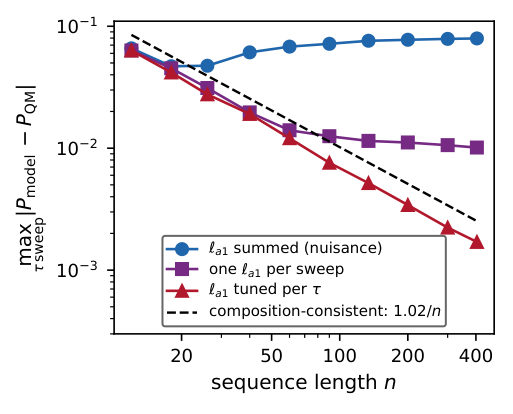
<figcaption class="paper-figure-caption"><b>Fig 1.</b> FIG. 2. Maximum partition-probability deviation from QM against sequence length n. Published parametrization (|2, 0⟩ input, mid-τ sweep): ℓa1 summed (plateau), one ℓa1 per sweep (1/n to a ∼1% floor), and ℓa1 tuned per setting (clean 1/n). The composition-consistent parametrization (black dashed) makes a single prediction, 1.02/n for |2, 0⟩over the full grid.</figcaption>
</figure>
<figure class="paper-figure-card">
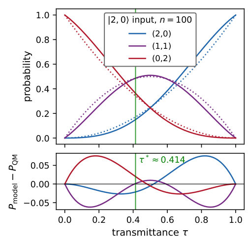
<figcaption class="paper-figure-caption"><b>Fig 2.</b> FIG. 1. Sequence-model (solid) and QM (dotted) partition probabilities for a |2, 0⟩input at n = 100, with their differ- ence below. The green line marks the null-differential working point τ ∗= 0.414 where the model and QM agree for the (1, 1) outcome while disagreeing for (2, 0) and (0, 2).</figcaption>
</figure>
<figure class="paper-figure-card">
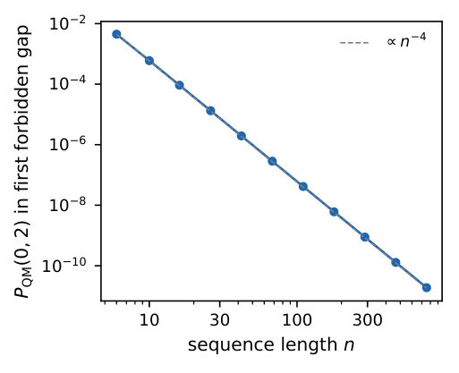
<figcaption class="paper-figure-caption"><b>Fig 3.</b> FIG. 3. Granularity signature: the QM probability of the outcome that the finite-n model forbids in the last rational grid gap τ ∈(cos2(π/2n), 1) falls as n−4.</figcaption>
</figure>
<figure class="paper-figure-card">

<figcaption class="paper-figure-caption"><b>Fig 4.</b> FIG. 4. Experiment-design optimization. (a) Discrimination landscape: per-event KL divergence between QM and the un- conditioned model (n = 100) for candidate input states. (b) For |1, 1⟩, the conditioned model evades any single-τ test by tuning ℓa1 (dots), but no single ℓa1 fits a set of transmittances jointly: the optimal 3-point set (triangles, dashed level) re- stores percent-scale discriminability.</figcaption>
</figure>
<figure class="paper-figure-card">

<figcaption class="paper-figure-caption"><b>Fig 5.</b> FIG. 5. Belenos full-curve campaign: P(1, 1) for the native |1, 1⟩input across 25 transmittances (20 000 samples each; statistical error bars are smaller than the symbols), against QM with jointly fitted in-situ nuisances (blue) and the uncon- ditioned sequence model at n = 100 under the same nuisances, in the published linear parametrization, evaluated on its na- tive rational transmittance grid (green). Shaded bands show the per-job compilation reproducibility (στ = 0.026, mea- sured from the scatter of the run itself) around each hypothe- sis; the lower panel shows the magnitude of the residuals with the same band around QM. The model requires a coherent +0.10–0.12 excess at both flanks;...</figcaption>
</figure>
</div>

<p><strong>Summary.</strong> This paper uses cloud photonic quantum processors to test the hypothesis that quantum mechanics emerges as a statistical limit from a discrete underlying theory. By analyzing photon Fock state measurements, the authors constrain the information capacity of the physical register, ruling out simpler discrete models and demonstrating that this capacity can be experimentally quantified.</p>
<p><strong>Why it may be interesting.</strong> This work directly bridges quantum foundations with experimental quantum optics, providing a concrete, measurable test for the fundamental nature of quantum statistics using current photonic hardware.</p>
<details>
<summary>Detailed structure</summary>
<p><strong>Main problem.</strong> The paper investigates whether quantum mechanics is the statistical limit of a more fundamental discrete theory by quantifying the information capacity of the underlying physical system.</p>
<p><strong>Main result.</strong> Experimental tests using cloud photonic quantum processors exclude discrete models with information capacities less than $10^2$, establishing that information capacity is an experimentally boundable quantity.</p>
<p><strong>Method.</strong> The authors employed random-effects likelihood analysis and differential tests on photon Fock states measured on programmable interferometers to compare measured outcome probabilities against predictions from the discrete binary-sequence model versus quantum mechanics.</p>
<p><strong>Model / system.</strong> The physical system is commercial cloud photonic quantum processors utilizing photon Fock states. The theoretical model tested is the binary-sequence model of Powers et al., which predicts quantum statistics in the limit of infinite sequence length ($n 	o \infty$).</p>
<p><strong>Key observables.</strong> Outcome probabilities, deviation from the quantum partition law, and the sequence length $n$ (interpreted as information capacity).</p>
<p><strong>Important parameters / regimes.</strong> The information capacity bound ($>10^2$), the scaling of deviations ($1.24/n$), and the statistical floor ($10^{-3}$).</p>
<p><strong>Assumptions / limitations.</strong> Systematics (like calibration offsets and source indistinguishability) are determined <em>in situ</em> and treated as nuisance parameters; the composition-consistent parametrization is assumed to be the correct physical description.</p>
<p><strong>Figures summary.</strong> Figures compare sequence-model vs. QM partition probabilities for various inputs and show the dependence of model deviation on sequence length $n$ and different analysis conditions.</p>
<p><strong>Paper structure.</strong> The paper progresses by establishing the theoretical premise (QM as a statistical limit), detailing the experimental setup and model (binary-sequence model), presenting rigorous statistical tests (random-effects likelihood, differential tests), and concluding with the quantitative bounds on information capacity.</p>
</details>
<details>
<summary>Abstract</summary>
<p>Our central premise is that quantum mechanics may be the statistical limit of a more fundamental discrete theory: any such theory equips a physical system with a finite information capacity, and its departure from quantum statistics is controlled by how much of that capacity the system uses. We show that commercial cloud photonic quantum processors have reached the precision required to bound this capacity from below, using the binary-sequence model of Powers et al. as the concrete test theory: outcome probabilities arise from counting discrete sequences of length $n$, quantum mechanics is recovered as $n \to \infty$, and $n$ measures the information capacity of the register behind a prepared state. Photon Fock states $|1\rangle$, $|1,1\rangle$, heralded $|2\rangle$, and cascaded beam-splitter pairs are measured on programmable interferometers with dominant systematics determined in situ. The model's composition-consistent parametrization, singled out by requiring that rotations compose, recovers quantum mechanics with deviations $1.24/n$; a random-effects likelihood analysis calibrated by parametric bootstrap excludes all $n \le 100$: the information capacity of the register carrying the two-photon state, if finite, exceeds $10^2$. Cascaded beam splitters test the composition law directly: the data are split-invariant, excluding naive count composition at $8σ$ and confirming the interference-sign rule. Model-independently, curve-averaged deviations from the quantum partition law larger than $2.3\times10^{-2}$ are excluded at 95% CL, and the originally published linear parametrization is excluded outright. Because the compilation offset is frozen per circuit it is calibratable, opening the $10^{-3}$ floor ($n \sim 10^3$) to current hardware: cloud photonic processors are quantitative instruments for quantum foundations, and information capacity an experimentally boundable quantity.</p>
</details>
<p><sub><a href="#top">↑ back to top</a></sub></p>

<p><a id="paper-2609.09305"></a></p>
<h3 id="transient-and-universal-regimes-in-quantum-reaction-transport-kinetics"><a href="http://arxiv.org/abs/2609.09305v1">Transient and universal regimes in quantum reaction-transport kinetics</a></h3>
<p><strong>Authors:</strong> Hossein Hosseinabadi, Roderich Moessner<br>
<strong>Type:</strong> theory · <strong>Category:</strong> statistical mechanics · <strong>PDF:</strong> <a href="https://arxiv.org/pdf/2609.09305v1">https://arxiv.org/pdf/2609.09305v1</a><br>
<strong>Analysis basis:</strong> full PDF text, analyzed in chunks
<strong>Topic relevance:</strong> 🔥 <code>Keldysh / 2PI / non-Gaussian methods</code> <strong>4/5</strong> · <code>non-equilibrium universality</code> <strong>3/5</strong> · <code>analog quantum simulation</code> <strong>1/5</strong> · <code>correlated / nonlocal dissipation</code> <strong>1/5</strong> · <code>driven-dissipative phase transition</code> <strong>1/5</strong> · <code>methods for driven-dissipative</code> <strong>1/5</strong> · <code>scars &amp; prethermalization</code> <strong>1/5</strong></p>
<div class="figure-strip-hint">↔ Scroll figures horizontally</div>
<div class="paper-figures-scroll">
<figure class="paper-figure-card">
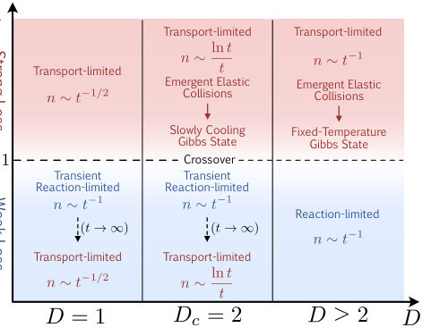
<figcaption class="paper-figure-caption"><b>Fig 1.</b> FIG. 1. Schematic kinetic-regime diagram as a function of spatial dimension D and loss strength Γ/J. In D = 1, the asymptotic dynamics is transport-limited with n ∼t−1/2, although weak loss can produce a long transient reaction- limited regime. D = 2 is marginal, with n ∼(ln t)/t, while for D &gt; 2 the mean-field decay n ∼t−1 is asymptotically restored. At strong loss and D &gt; 1, emergent elastic collisions can rapidly redistribute particles and establish a quasi-stationary thermal state.</figcaption>
</figure>
<figure class="paper-figure-card">
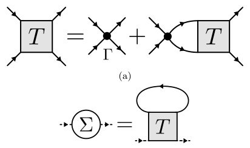
<figcaption class="paper-figure-caption"><b>Fig 2.</b> FIG. 3. (a) Self-consistent diagrammatic equation for the T- matrix. (b) Boson self-energy in terms of the T-matrix.</figcaption>
</figure>
<figure class="paper-figure-card">
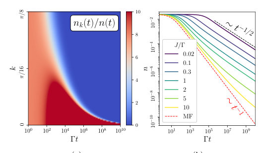
<figcaption class="paper-figure-caption"><b>Fig 3.</b> FIG. 4. (a) Time evolution of the momentum distribution normalized by the average density in one dimension for J = Γ. Higher-momentum modes decay more rapidly, causing the surviving population to concentrate near k = 0. (b) Density evolution for different hopping strengths. The asymptotic decay follows n ∼t−1/2 for all J/Γ, while for strong hopping a parametrically long transient mean-field regime n ∼t−1 can precede the asymptotic scaling.</figcaption>
</figure>
<figure class="paper-figure-card">

<figcaption class="paper-figure-caption"><b>Fig 4.</b> FIG. 1. Leading-order correction to the 2-particle vertex in the particle-hole channel. Each row separately vanishes in the vacuum.</figcaption>
</figure>
<figure class="paper-figure-card">
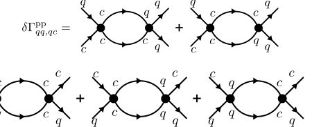
<figcaption class="paper-figure-caption"><b>Fig 5.</b> FIG. 2. Leading-order correction to the 2-particle vertex in the pairing channel.</figcaption>
</figure>
</div>

<p><strong>Summary.</strong> This work analyzes the long-time kinetics of quantum particle annihilation in varying spatial dimensions. It shows that dimensionality dictates the asymptotic decay law, revealing that fluctuations dominate the dynamics for $D<2$. The methodology uses advanced field theory techniques to derive dimension-specific scaling laws for the particle density.</p>
<p><strong>Why it may be interesting.</strong> The study provides a detailed, dimension-dependent classification of non-equilibrium dynamics, which is crucial for understanding how dimensionality fundamentally alters relaxation processes in interacting quantum many-body systems, relevant to quantum gases and open quantum systems.</p>
<details>
<summary>Detailed structure</summary>
<p><strong>Main problem.</strong> The paper investigates the universal long-time kinetic behavior of quantum reaction-transport systems, specifically how dimensionality affects the relaxation process.</p>
<p><strong>Main result.</strong> The system's asymptotic kinetics are highly dependent on the spatial dimension $D$, showing deviations from simple mean-field expectations below $D=2$. For $D>2$, the density decays as $n(t) \propto t^{-1}$, while $D=1$ yields $n(t) \propto t^{-1/2}$.</p>
<p><strong>Method.</strong> The analysis employs Keldysh field theory and derives kinetic equations for momentum occupations, systematically analyzing the renormalization of reaction vertices and the emergence of effective collision terms.</p>
<p><strong>Model / system.</strong> The model is quantum binary annihilation ($A+A 	o \emptyset$) of bosons on a $D$-dimensional lattice, governed by a Hamiltonian and subjected to particle loss ($\Gamma$) and coherent hopping ($J$).</p>
<p><strong>Key observables.</strong> Occupation number $n_k(t)$, total density $n(t)$, and the temperature $T(t)$ of the system.</p>
<p><strong>Important parameters / regimes.</strong> Spatial dimension $D$, loss strength $\Gamma$, and hopping rate $J$. The upper critical dimension is $D_c=2$.</p>
<p><strong>Assumptions / limitations.</strong> The analysis relies on approximations, such as retaining terms up to quadratic order in occupations, and analyzing the system in the continuum limit.</p>
<p><strong>Figures summary.</strong> Figures illustrate the kinetic-regime diagram showing dependence on $D$ and $\Gamma/J$, and depict diagrams related to the pair annihilation vertex and boson self-energy.</p>
<p><strong>Paper structure.</strong> The paper systematically derives the kinetic equation in momentum space, analyzes the asymptotic behavior by examining the infrared divergence of the pair propagator in different dimensions ($D=1, 2, >2$), and solves the resulting rate equations to determine the scaling laws for $n(t)$.</p>
</details>
<details>
<summary>Abstract</summary>
<p>Quantum reaction-transport systems consist of coherently propagating particles that irreversibly react upon encounter. Their relaxation is commonly classified as reaction-limited or transport-limited, depending on the relative timescales of reaction and particle transport. We show that this expectation fails in low dimensions by studying the quantum binary annihilation, $A+A \to \emptyset$, where reaction processes acquire singular fluctuation corrections below the upper critical dimension $D_c=2$. Consequently, fluctuations dominate the asymptotic kinetics for $D<2$. In one dimension, they render mean-field relaxation transient and drive the system toward a transport-limited regime with $n\sim t^{-1/2}$, governed by a quantum-Zeno scale even for arbitrarily weak loss. At $D=2$, the kinetics acquires logarithmic corrections, whereas above two dimensions mean-field scaling is asymptotically restored. At and below the upper critical dimension, mean-field behavior can nevertheless persist over parametrically long crossover times before the asymptotic fluctuation-dominated regime emerges. We also show that the same fluctuations generate effective elastic collisions despite the absence of microscopic coherent interactions. In $D>1$, these collisions redistribute momentum populations and are parametrically faster than losses in the transport-limited regime, allowing the system to approach a quasi-stationary thermal state.</p>
</details>
<p><sub><a href="#top">↑ back to top</a></sub></p>

<p><a id="paper-2609.09805"></a></p>
<h3 id="electrically-tunable-two-photon-interference-from-remote-silicon-vacancy-centers-in-industrial-silicon-carbide"><a href="http://arxiv.org/abs/2609.09805v1">Electrically tunable, two-photon interference from remote silicon-vacancy centers in industrial silicon carbide</a></h3>
<p><strong>Authors:</strong> Fedor Dzmitryevich Hrunski, Daniel Scheller, Maximilian Hollendonner, Kim Ullerich, Shravan Kumar Parthasarathy, Chiun Fu, Andre Pointner, Wolfgang Knolle, Florian Kaiser, Durga Bhaktavatsala Rao Dasari, Roland Nagy<br>
<strong>Type:</strong> experiment · <strong>Category:</strong> quantum information and computing · <strong>PDF:</strong> <a href="https://arxiv.org/pdf/2609.09805v1">https://arxiv.org/pdf/2609.09805v1</a><br>
<strong>Analysis basis:</strong> full PDF text, analyzed in chunks
<strong>Topic relevance:</strong> 🔥 <code>interference shaping light</code> <strong>4/5</strong> · <code>QC/QI experiment</code> <strong>3/5</strong> · <code>quantum optics experiment</code> <strong>3/5</strong> · <code>quantum measurements</code> <strong>1/5</strong></p>
<div class="figure-strip-hint">↔ Scroll figures horizontally</div>
<div class="paper-figures-scroll">
<figure class="paper-figure-card">

<figcaption class="paper-figure-caption"><b>Fig 1.</b> Fig. 1| Single VSi centers in industrial 4H SiC p-i-n diode structures and their electrical tuning.</figcaption>
</figure>
<figure class="paper-figure-card">

<figcaption class="paper-figure-caption"><b>Fig 2.</b> Fig. 2| Setup for two-photon interference between two spatially separated VSi centers and single photon</figcaption>
</figure>
<figure class="paper-figure-card">
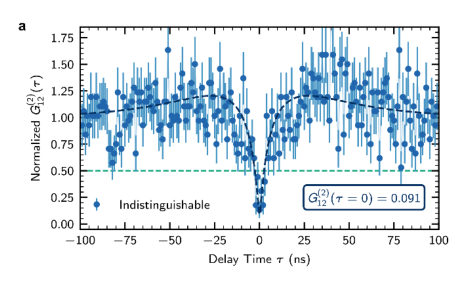
<figcaption class="paper-figure-caption"><b>Fig 3.</b> Fig.3| Two-photon interference between remote VSi centers in two separate 4H-SiC samples.</figcaption>
</figure>
<figure class="paper-figure-card">
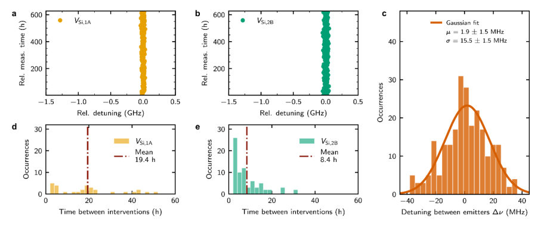
<figcaption class="paper-figure-caption"><b>Fig 4.</b> Fig.4| Long-term spectral stability of interfered VSi centers and distribution of deduced two-photon</figcaption>
</figure>
</div>

<p><strong>Summary.</strong> This paper demonstrates the use of electrically tunable silicon vacancy (V_Si) centers in industrial silicon carbide (SiC) as robust quantum nodes. By achieving high-visibility two-photon interference over a 26-day period, the authors establish this platform as a scalable and stable building block for future distributed quantum networks.</p>
<p><strong>Why it may be interesting.</strong> This work provides a highly scalable, solid-state platform for quantum networking, directly addressing the engineering hurdles (stability, integration) that limit the deployment of quantum repeaters.</p>
<details>
<summary>Detailed structure</summary>
<p><strong>Main problem.</strong> The core challenge is establishing high-visibility, spectrally stable two-photon interference from spatially separated quantum emitters, which is crucial for building functional distributed quantum networks.</p>
<p><strong>Main result.</strong> The authors successfully demonstrated high-quality two-photon interference with raw visibilities of 82% over a 26-day measurement campaign, using VSi centers embedded in industrially available SiC diodes.</p>
<p><strong>Method.</strong> The experiment utilized Hong-Ou-Mandel (HOM) interferometry between two remote quantum emitters, combined with active electrical biasing to maintain spectral stability over long periods.</p>
<p><strong>Model / system.</strong> The physical system is the silicon vacancy (V_Si) color center embedded in industrial-grade 4H silicon carbide (SiC) p-i-n diodes. These centers act as solid-state quantum nodes whose emission can be tuned and stabilized electrically.</p>
<p><strong>Key observables.</strong> Two-photon interference visibility (82%), spectral linewidths (below 60 MHz), and long-term stability (bias readjustment every 8.4 hours).</p>
<p><strong>Important parameters / regimes.</strong> Two-meter spatial separation, 26-day measurement duration, and the linear tuning coefficient of the A2 transition frequency with voltage bias.</p>
<p><strong>Assumptions / limitations.</strong> The analysis relies on modeling the cross-correlation data using established quantum interference formulas, and the stability is demonstrated through long-term electrical control of the emitter frequency.</p>
<p><strong>Figures summary.</strong> Figures illustrate the VSi center's optical contrast, the p-i-n diode structure, PLE spectra showing linewidths, and the experimental setup for the two-photon interference measurement across separated cryostats.</p>
<p><strong>Paper structure.</strong> The paper progresses from characterizing the VSi centers' tunability and spectral narrowing in SiC diodes, to demonstrating single-photon purity, and finally to performing and analyzing the two-photon interference measurement over an extended, stable period.</p>
</details>
<details>
<summary>Abstract</summary>
<p>Distributed quantum networks rely on spatially separated, independently operated quantum systems as network nodes, whose emitted photons must be interfered with high visibility to establish end-to-end entanglement. Crucially, for network-relevant applications, high visibilities must be achieved over prolonged timescales to reduce overheads for error correction, and to increase network rates. Here, we demonstrate experimentally that silicon vacancy $\mathrm{V_{Si}}$ color centers in silicon carbide (SiC) achieve these requirements, notably in a mass-deployable fashion. We integrate $\mathrm{V_{Si}}$ centers in different industrial-grade SiC p-i-n diodes, which are controlled via voltage biassing. This way, we demonstrate both, spectral overlapping of 19 randomly selected $\mathrm{V_{Si}}$ centers in different diodes, as well as spectral narrowing close to the lifetime limit, i.e., typically below 60 MHz. Notably, these performance parameters are long-term stable, e.g., readjusting the p-i-n diode bias is required only every 8.4 hours, which reduces significantly the overall experimental overhead. We then use these assets to demonstrate high-quality two-photon interference between $\mathrm{V_{Si}}$ centers located in two different cryostat setups, which are spatially separated by two meters. Notably, we perform a 26-days long measurement campaign, demonstrating two-photon interference with state-of-the-art raw interference visibilities of 82%, which aligns with the current state-of-the-art. These results establish $\mathrm{V_{Si}}$ centers in industry-grade SiC devices as a scalable, spectrally stable building block for distributed quantum networks.</p>
</details>
<p><sub><a href="#top">↑ back to top</a></sub></p>

<p><a id="paper-2609.10043"></a></p>
<h3 id="quantum-computational-resources-and-validation-protocols-for-a-three-mode-non-gaussian-trilinear-hamiltonian"><a href="http://arxiv.org/abs/2609.10043v1">Quantum computational resources and validation protocols for a three-mode non-Gaussian trilinear Hamiltonian</a></h3>
<p><strong>Authors:</strong> Niccolò Laurora, Matteo Bina, Giulia Ferrini, Alessandro Ferraro<br>
<strong>Type:</strong> both · <strong>Category:</strong> quantum information and computing · <strong>PDF:</strong> <a href="https://arxiv.org/pdf/2609.10043v1">https://arxiv.org/pdf/2609.10043v1</a><br>
<strong>Analysis basis:</strong> full PDF text, analyzed in chunks
<strong>Topic relevance:</strong> 🔥 <code>QC/QI experiment</code> <strong>4/5</strong> · <code>analog quantum simulation</code> <strong>3/5</strong> · <code>quantum measurements</code> <strong>3/5</strong> · <code>quantum optics experiment</code> <strong>1/5</strong></p>
<div class="figure-strip-hint">↔ Scroll figures horizontally</div>
<div class="paper-figures-scroll">
<figure class="paper-figure-card">
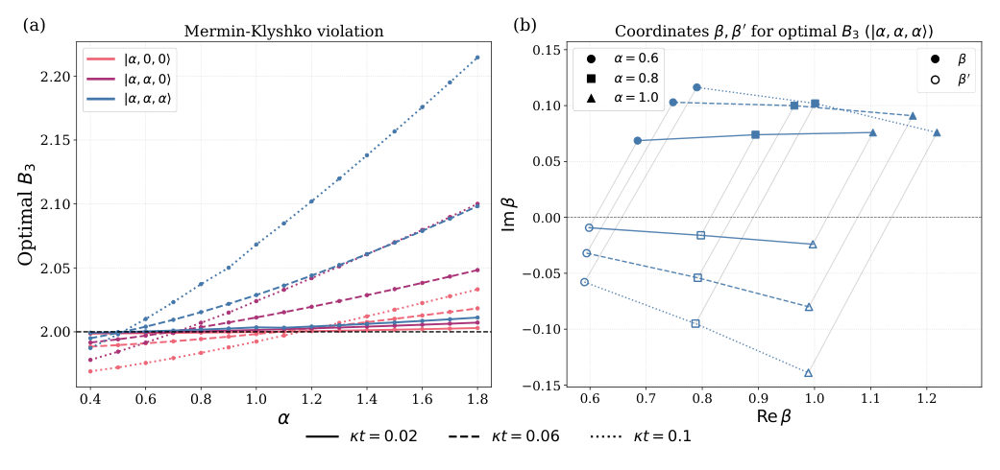
<figcaption class="paper-figure-caption"><b>Fig 1.</b> FIG. 1. (a) Optimal parameter B3 as a function of the initial-state seeding amplitude α under the action of the trigemini unitary ˆUT. Different colors correspond to the initial states |α, 0, 0⟩, |α, α, 0⟩and |α, α, α⟩, and different line styles correspond to the couplings κt = 0.02 (solid), 0.06 (dashed), 0.1 (dotted). (b) Optimal phase-space coordinates (β, β′) (solid/hollow markers, respectively) at α = 0.6, 0.8, 1.0 for which the initial three-seeded configuration |α, α, α⟩violates (27), for the different considered couplings.</figcaption>
</figure>
<figure class="paper-figure-card">

<figcaption class="paper-figure-caption"><b>Fig 2.</b> FIG. 2. (a) Optimal B3 (27) as a function of the seeding parameter α for the state ˆUT|α, α, α⟩at κt = 0.1, degraded by resolution noise of increasing width σ, with the ideal curve (σ = 0) as a comparison. Non-locality properties still occur for standard deviations up to 5%. (b), (c) Bell factor B3 in a disk of radius R = 0.3 around the optimal violation coordinates (β, β′) for κt = 0.1, α = 0.8 (gold central star, B3 = 2.037), with (b) systematic perturbation δβ with β′ fixed at its optimum, and (c) systematic perturbation δβ′ with β fixed at its optimum. The dotted and dashed black circles mark regions within Gaussian errors σ = 0.01 and σ = 0.05, respectively, considered in panel (a).</figcaption>
</figure>
<figure class="paper-figure-card">

<figcaption class="paper-figure-caption"><b>Fig 3.</b> FIG. 3. Optimal B3 (27) as a function of the seeding parameter α for the state ˆUT|α, α, α⟩at κt = 0.1, with the ideal curve for the state without noise as a comparison in both panels. (a): Detrimental effect of the thermal noise due to increasing admixture values ε from 0.001 to 0.01. The effect of the average thermal excitation ¯n is negligible. (b): Effects of the presence of self- and cross-Kerr terms in the Hamiltonian model. The addition of a self-Kerr term slightly lowers the violation. The presence of a cross-Kerr interaction is beneficial and enhances non-local properties of the state.</figcaption>
</figure>
<figure class="paper-figure-card">

<figcaption class="paper-figure-caption"><b>Fig 4.</b> FIG. 4. Quantifiers of Wigner negativity of the trigemini state compared with the reference states, all as functions of the average photon number. (a) Conversion plot between the native state parameters (κt, α, γ) required to generate each state: trigemini, trisqueezed (34), CPS (35), cat (36) and ECS (37). (b) CV mana of the same states on a common vertical scale. (c) Global minimum of the Wigner function on two vertical scales: the left axis refers to the three-mode states (trigemini and ECS), whose negativity stays within the order of 10−4, the right axis to the single-mode ones (trisqueezed, CPS and cat), which are about two orders of magnitude deeper. In every panel, the trisqueezed...</figcaption>
</figure>
<figure class="paper-figure-card">

<figcaption class="paper-figure-caption"><b>Fig 5.</b> FIG. 5. Robustness of the global Wigner minimum of the trigemini state, in both panels as a function of the average photon number. (a) Thermal noise: minimum of the Wigner function of the state (30), with ¯n = 1 and ε = 0.05, 0.1, 0.2 (different colors). (b) Resolution noise: minimum of the Wigner function smoothed by a Gaussian kernel of width σ, for σ = 0.01, 0.05, 0.1 (different colors). In both panels the black dotted line is the noiseless reference (trigemini state).</figcaption>
</figure>
</div>

<p><strong>Summary.</strong> This paper analyzes a three-mode non-Gaussian Hamiltonian relevant to superconducting circuits, focusing on its ability to generate key quantum resources like entanglement and Wigner negativity. The authors provide theoretical proofs and, crucially, introduce a measurement-efficient protocol to experimentally verify the Hamiltonian's operation without requiring computationally intensive full state tomography. This advances the practical realization of continuous-variable quantum computation.</p>
<p><strong>Why it may be interesting.</strong> It directly tackles the experimental bottleneck in quantum computation by providing a resource-based certification method that minimizes required measurements, which is crucial for implementing complex quantum gates.</p>
<details>
<summary>Detailed structure</summary>
<p><strong>Main problem.</strong> The paper addresses the challenge of experimentally characterizing and validating the computational resources generated by non-Gaussian interactions, specifically using a three-mode trilinear Hamiltonian.</p>
<p><strong>Main result.</strong> The authors demonstrate that the Hamiltonian generates both multipartite entanglement and Wigner negativity, and they propose a measurement-efficient protocol to certify this without full Wigner function reconstruction.</p>
<p><strong>Method.</strong> The work combines theoretical analysis of resource generation (entanglement witnesses, negativity quantification) with the proposal of an experimental validation protocol based on measuring zero-variance observables and targeted phase-space measurements.</p>
<p><strong>Model / system.</strong> The system is a three-mode quantum system whose dynamics are governed by a non-Gaussian trilinear Hamiltonian ($\hat{H}_T$), realized in superconducting microwave platforms.</p>
<p><strong>Key observables.</strong> Multipartite entanglement (certified via displaced-parity Bell tests) and Wigner negativity (quantified by Wigner logarithmic negativity).</p>
<p><strong>Important parameters / regimes.</strong> The coupling strength $\kappa$ and time $t$ governing the Hamiltonian evolution.</p>
<p><strong>Assumptions / limitations.</strong> The primary assumption is that the proposed measurement protocol significantly reduces experimental overhead compared to full Wigner function reconstruction.</p>
<p><strong>Figures summary.</strong> Figures compare numerical results for the Wigner function cross-section for known states (ECS) and the vacuum-seeded state, showing agreement between analytical and numerical methods across different truncation cut-offs.</p>
<p><strong>Paper structure.</strong> The paper systematically moves from describing the Hamiltonian's features and symmetries, to analyzing the generated computational resources (entanglement and negativity), and finally presenting the measurement-efficient validation protocols.</p>
</details>
<details>
<summary>Abstract</summary>
<p>Non-Gaussian interactions are a key ingredient for achieving universality in continuous-variable quantum computation, yet their experimental characterization and the validation of their correct implementation remain challenging tasks. In this work, we focus on a three-mode non-Gaussian trilinear Hamiltonian that has recently been realized in superconducting microwave platforms, and present a comprehensive theoretical analysis of the computational resources it generates, together with experimentally accessible protocols to validate their presence. We systematically investigate its ability to generate two key resources for quantum computation: multipartite entanglement and Wigner negativity. In particular, using displaced-parity Bell tests, we demonstrate the generation of nonlocal states and thereby provide an operational certification of multipartite entanglement in the non-Gaussian states produced by the dynamics. We further quantify the Wigner logarithmic negativity and benchmark it against that of established non-Gaussian resource states. Building on this resource-based characterization, we introduce a measurement-efficient protocol for the experimental validation of the Hamiltonian implementation without requiring full reconstruction of the Wigner function. The protocol combines the measurement of zero-variance observables (nullifiers and stabilizers) with a limited number of targeted phase-space measurements, leading to a drastic reduction of the experimental overhead.</p>
</details>
<p><sub><a href="#top">↑ back to top</a></sub></p>

<p><a id="paper-2609.10100"></a></p>
<h3 id="in-situ-characterization-of-a-photon-subtraction-device-via-heralding-counts-and-homodyne-detection"><a href="http://arxiv.org/abs/2609.10100v1">In situ characterization of a photon-subtraction device via heralding counts and homodyne detection</a></h3>
<p><strong>Authors:</strong> Priyanka Sharma, Matteo G. A. Paris, Stefano Olivares<br>
<strong>Type:</strong> theory · <strong>Category:</strong> quantum information and computing · <strong>PDF:</strong> <a href="https://arxiv.org/pdf/2609.10100v1">https://arxiv.org/pdf/2609.10100v1</a><br>
<strong>Analysis basis:</strong> full PDF text, analyzed in chunks
<strong>Topic relevance:</strong> 🔥 <code>quantum measurements</code> <strong>4/5</strong> · <code>Full counting statistics</code> <strong>3/5</strong> · <code>quantum optics experiment</code> <strong>3/5</strong></p>
<div class="figure-strip-hint">↔ Scroll figures horizontally</div>
<div class="paper-figures-scroll">
<figure class="paper-figure-card">
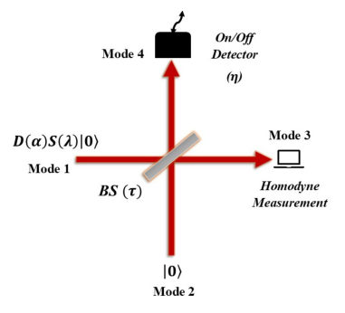
<figcaption class="paper-figure-caption"><b>Fig 1.</b> FIG. 1. Sketch of the estimation setup. A displaced squeezed state (mode 1) is mixed with the vacuum state (mode</figcaption>
</figure>
<figure class="paper-figure-card">

<figcaption class="paper-figure-caption"><b>Fig 2.</b> FIG. 2. Sloppiness S as a function of the homodyne phase ϕ ∈[0, π/2], for different values of τ and η. Panels (a)</figcaption>
</figure>
<figure class="paper-figure-card">
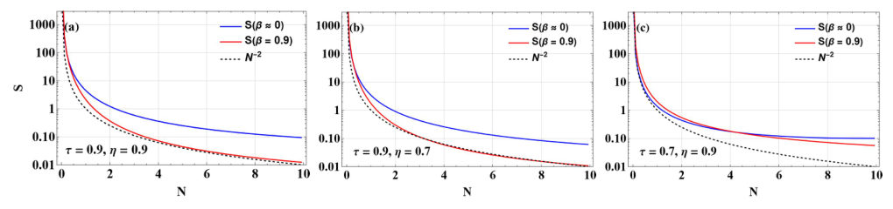
<figcaption class="paper-figure-caption"><b>Fig 3.</b> FIG. 3. Sloppiness S as a function of the input energy N for different values of τ and η with nearly no squeezing</figcaption>
</figure>
<figure class="paper-figure-card">

<figcaption class="paper-figure-caption"><b>Fig 4.</b> FIG. 4. Plots of CF ,  F−1</figcaption>
</figure>
<figure class="paper-figure-card">

<figcaption class="paper-figure-caption"><b>Fig 5.</b> Fig. 4 shows the dependence of CF ,  F−1</figcaption>
</figure>
</div>

<p><strong>Summary.</strong> This paper proposes a novel, in situ method to simultaneously characterize the key imperfections ($    au$ and $\eta$) of a photon-subtraction device using only its operational measurement data. By applying multi-parameter estimation theory, the authors prove that a joint estimation strategy is statistically superior to sequential methods for accurately determining these critical device parameters.</p>
<p><strong>Why it may be interesting.</strong> This work provides rigorous theoretical tools (Fisher information, sloppiness) to assess the practical limitations and optimal measurement protocols for quantum state generation resources, which is crucial for advancing quantum information processing.</p>
<details>
<summary>Detailed structure</summary>
<p><strong>Main problem.</strong> The paper addresses the need for an experimentally feasible method to simultaneously estimate the transmissivity ($   au$) of a beam splitter and the quantum efficiency ($\eta$) of a heralding detector in a photon-subtraction device.</p>
<p><strong>Main result.</strong> The joint estimation strategy using combined homodyne and click statistics provides a lower estimation bound than sequential estimation, proving it is the superior method for characterizing the device parameters.</p>
<p><strong>Method.</strong> The authors employ classical multi-parameter estimation theory, deriving the total Fisher information matrix by combining contributions from detector click statistics and conditional homodyne measurements.</p>
<p><strong>Model / system.</strong> The system is a photon-subtraction device where a displaced squeezed state interacts with vacuum at a beam splitter. The measurement involves homodyne detection on the transmitted mode and counting clicks in the reflected mode.</p>
<p><strong>Key observables.</strong> Detector click statistics, homodyne measurement results (quadrature distribution), and the Fisher information matrix.</p>
<p><strong>Important parameters / regimes.</strong> Beam splitter transmissivity ($ au$), detector quantum efficiency ($\eta$), squeezing fraction ($eta$), and mean photon number ($N$).</p>
<p><strong>Assumptions / limitations.</strong> The analysis assumes the output state remains Gaussian due to the linear mode transformation, and it compares the joint estimation bound against the sequential estimation bound.</p>
<p><strong>Figures summary.</strong> Figures illustrate the dependence of the sloppiness parameter ($S$) on the homodyne phase ($\phi$), the comparison of estimation bounds between joint and sequential methods, and the effect of squeezing ($eta$) on the estimation uncertainty.</p>
<p><strong>Paper structure.</strong> The paper first introduces the problem and the measurement setup. It then develops the theoretical framework using Fisher information for both 'on' and 'off' detection events. The core of the work compares the statistical performance of joint vs. sequential estimation strategies, concluding with analyses on parameter dependence (e.g., on squeezing or photon number).</p>
</details>
<details>
<summary>Abstract</summary>
<p>Photon subtraction is one of the most important techniques for generating non-Gaussian optical states and constitutes a key resource for quantum information processing and quantum metrology. The practical performance of a photon-subtraction device is primarily determined by the transmissivity of the beam splitter and the quantum efficiency of the heralding detector. Accurate knowledge of these parameters is therefore essential for assessing the quality of the generated non-classical states. In this work, we propose an experimentally feasible in situ scheme for the simultaneous estimation of these two parameters using only the measurement data produced during the operation of the device. Our protocol combines the click statistics of an on/off heralding detector with homodyne measurements performed on the transmitted mode of the beam splitter when fed by a displaced squeezed state. Within the framework of classical multi-parameter estimation theory, we derive the corresponding Fisher information matrix and investigate both joint and sequential estimation strategies. For simultaneous measurement of parameters, we evaluate the sloppiness of the underlying statistical model and analyze its dependence on the measured quadrature, probe photon number, squeezing fraction, beam splitter transmissivity, and detector efficiency. Our analysis proves that an appropriate choice of the homodyne quadrature substantially reduces parameter degeneracy and enables efficient simultaneous estimation. Furthermore, we show that the joint estimation strategy consistently provides a lower estimation bound than the sequential estimation approach over a broad range of experimentally relevant parameters.</p>
</details>
<p><sub><a href="#top">↑ back to top</a></sub></p>

<p><a id="paper-2609.09350"></a></p>
<h3 id="certified-measurement-and-control-of-an-entanglement-breaking-index-on-programmable-hardware"><a href="http://arxiv.org/abs/2609.09350v1">Certified measurement and control of an entanglement-breaking index on programmable hardware</a></h3>
<p><strong>Authors:</strong> Eran Kopel<br>
<strong>Type:</strong> both · <strong>Category:</strong> quantum information and computing · <strong>PDF:</strong> <a href="https://arxiv.org/pdf/2609.09350v1">https://arxiv.org/pdf/2609.09350v1</a><br>
<strong>Analysis basis:</strong> full PDF text, analyzed in chunks
<strong>Topic relevance:</strong> 🔥 <code>quantum measurements</code> <strong>4/5</strong> · <code>QC/QI experiment</code> <strong>3/5</strong> · <code>driven-dissipative phase transition</code> <strong>1/5</strong> · <code>methods for driven-dissipative</code> <strong>1/5</strong></p>
<div class="figure-strip-hint">↔ Scroll figures horizontally</div>
<div class="paper-figures-scroll">
<figure class="paper-figure-card">

<figcaption class="paper-figure-caption"><b>Fig 1.</b> Low-resolution page preview, page 2</figcaption>
</figure>
<figure class="paper-figure-card">
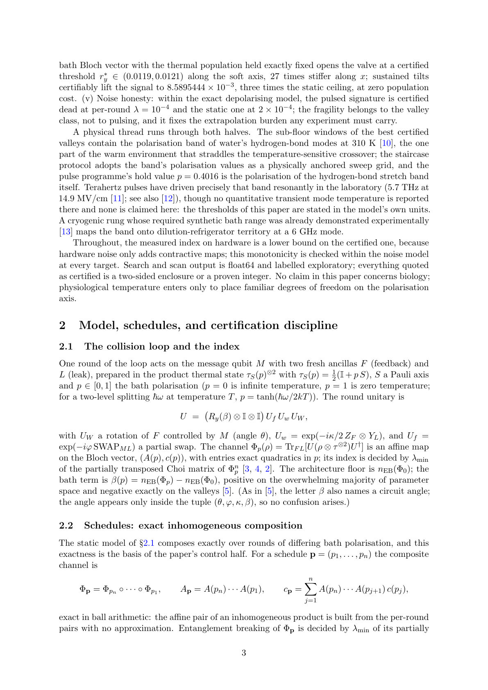
<figcaption class="paper-figure-caption"><b>Fig 2.</b> Low-resolution page preview, page 3</figcaption>
</figure>
<figure class="paper-figure-card">

<figcaption class="paper-figure-caption"><b>Fig 3.</b> Low-resolution page preview, page 4</figcaption>
</figure>
<figure class="paper-figure-card">
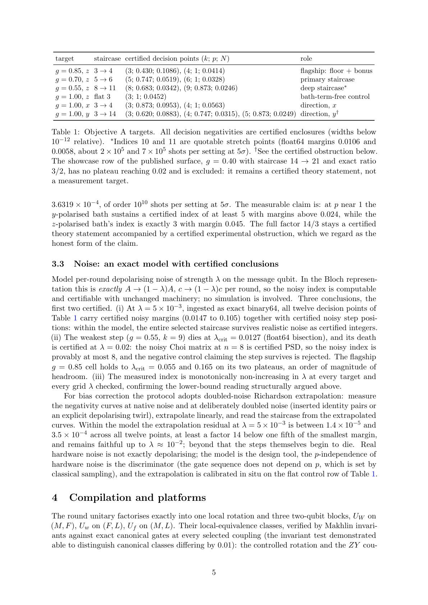
<figcaption class="paper-figure-caption"><b>Fig 4.</b> Low-resolution page preview, page 5</figcaption>
</figure>
<figure class="paper-figure-card">

<figcaption class="paper-figure-caption"><b>Fig 5.</b> Low-resolution page preview, page 6</figcaption>
</figure>
</div>

<p><strong>Summary.</strong> This work introduces a method to certify the measurement and control of the entanglement-breaking index of a quantum channel on programmable hardware. By utilizing a thermal collision feedback loop, the authors demonstrate that pulsed operations and coherent field tilts can significantly enhance the measurable signal compared to static protocols. The entire framework is underpinned by rigorous mathematical certification using advanced interval arithmetic.</p>
<p><strong>Why it may be interesting.</strong> The rigorous application of certified computation techniques (ball arithmetic) to a fundamental quantum information measure like $n_{EB}$ provides a powerful blueprint for verifying complex quantum properties on near-term hardware.</p>
<details>
<summary>Detailed structure</summary>
<p><strong>Main problem.</strong> The paper addresses the challenge of measuring and controlling the entanglement-breaking index, $n_{EB}(\Phi)$, of a quantum channel, an index previously unmeasurable.</p>
<p><strong>Main result.</strong> They demonstrate that this index can be certified as measurable and controllable on current programmable hardware using a thermal collision feedback loop, achieving improvements via pulsed operations and coherent control.</p>
<p><strong>Method.</strong> The methodology relies heavily on rigorous mathematical certification using ball arithmetic (256 bits) to establish bounds on observables like negativity, combined with experimental simulation techniques like gated search and circuit compilation.</p>
<p><strong>Model / system.</strong> The system models a quantum channel $\Phi$ acting on a message qubit, whose properties are controlled by varying the bath polarization $p$ via a collision feedback loop. The process is simulated on programmable hardware using specific unitary gates (CNOTs, arbitrary-angle gates).</p>
<p><strong>Key observables.</strong> Entanglement-breaking index ($n_{EB}$), Negativity, Bath Polarization ($p$), and the contrast of the 'thermal valley'.</p>
<p><strong>Important parameters / regimes.</strong> Noise strength ($\lambda$), decision-point margins (0.025 to 0.109), and the number of rounds/pulse depth (e.g., 53 rounds).</p>
<p><strong>Assumptions / limitations.</strong> The certification relies on exact arithmetic in ball arithmetic, and the measured index is only a lower bound due to hardware noise.</p>
<p><strong>Figures summary.</strong> The notes reference tables detailing objective targets for the staircase measurement and comparisons between pulsed, static, and coherently tilted signal strengths.</p>
<p><strong>Paper structure.</strong> The paper progresses from defining the unmeasurable index to proposing a measurable protocol using a collision feedback loop. It details measurement techniques (staircase, noise resilience), control mechanisms (pulsing, coherent tilt), and concludes with the quantitative results demonstrating the superiority of pulsed/coherent methods.</p>
</details>
<details>
<summary>Abstract</summary>
<p>The entanglement-breaking index of a quantum channel, the number of self-compositions after which the channel destroys all entanglement with any reference, has to our knowledge never been measured. We show that a certified thermal collision feedback loop makes this integer both measurable and controllable on current programmable hardware, every load-bearing quantity delivered as an interval-arithmetic certificate. On the measurement side: a target list for the integer staircase n_EB(p) with decision-point negativities certified at margins 0.025 to 0.109; an exact per-round depolarising model in which the selected staircase survives realistic noise as certified integers; an exact, tight compilation of the round unitary (seven CNOTs all-to-all, five native arbitrary-angle gates, ten on heavy-hex); and a 33-million-draw gated search bounding the thermal valley's contrast by a wall with an interior maximum, a certified 2.85x10^-3 near floor 89. On the control side: the model composes rounds of differing bath polarisation exactly, so the valley becomes a pulsed valve, switching at a certified minimal pulse of exactly eight rounds; the optimal pulsed signal, a certified 3.43x10^-3, beats the static protocol, so the best valley measurement is intrinsically pulsed; and a coherent tilt of the bath Bloch vector lifts the signal to a certified 8.6x10^-3, three times the static ceiling, at zero population cost. Valley signatures certifiably die near per-round noise strength 10^-4, fixing the error-extrapolation burden. The staircase is a near-term experiment; the pulsed valley a precisely priced one.</p>
</details>
<p><sub><a href="#top">↑ back to top</a></sub></p>

<p><a id="paper-2609.09463"></a></p>
<h3 id="temperature-induced-effective-topology-in-many-body-ultracold-atomic-quantum-systems"><a href="http://arxiv.org/abs/2609.09463v1">Temperature-induced effective topology in many-body ultracold atomic quantum systems</a></h3>
<p><strong>Authors:</strong> Nitya Cuzzuol, Michele Miotto, Arianna Montorsi, Giacomo Valtolina, Luca Barbiero<br>
<strong>Type:</strong> theory · <strong>Category:</strong> other · <strong>PDF:</strong> <a href="https://arxiv.org/pdf/2609.09463v1">https://arxiv.org/pdf/2609.09463v1</a><br>
<strong>Analysis basis:</strong> full PDF text, analyzed in chunks
<strong>Topic relevance:</strong> 🔥 <code>analog quantum simulation</code> <strong>4/5</strong> · <code>methods for driven-dissipative</code> <strong>3/5</strong> · <code>Rydberg arrays</code> <strong>1/5</strong></p>
<div class="figure-strip-hint">↔ Scroll figures horizontally</div>
<div class="paper-figures-scroll">
<figure class="paper-figure-card">
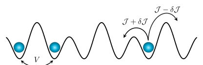
<figcaption class="paper-figure-caption"><b>Fig 1.</b> Figure 1. Schematic illustration of optical superlattice poten- tial for experimental realization of the dimerized model de- fined in Eq. (2), where bosons experience dimerized hopping amplitudes J ± δJ and nearest neighbor density-density in- teraction V .</figcaption>
</figure>
<figure class="paper-figure-card">

<figcaption class="paper-figure-caption"><b>Fig 2.</b> Figure 2. (a) Charge gap ∆ECb Eq. (4) (red) and neutral gap ∆ENb Eq. (5) (green) at T = 0 of the model HSSH Eq. (2) as a function of V for fixed δJ = 0.5. For values of V in the blue region, the model exhibits a D-SPTT =0 ground state, while in the orange region we observe a density wave phase. The neutral gap closes at V = 5.8 in correspondence to the phase transition between the D-SPTT =0 and the DW. The values of the energy gaps are obtained by fitting data from different chain lengths towards the thermodynamical limit. (b) Phase diagram of the same model at finite temperature. For low values of T, the two ground state phases extend to finite temperatures (D-SPTT =0 in the dark blue...</figcaption>
</figure>
<figure class="paper-figure-card">

<figcaption class="paper-figure-caption"><b>Fig 3.</b> Figure 3. Left: Order parameters as a function of temperature for model Eq. (2) at V = 5.3 (blue) and V = 6.5 (orange). Crosses indicate the corresponding ground-state values at T = 0, obtained via DMRG. (a) Staggered magnetization Eq. (7) and (b) degeneracy order parameter Eq. (1) (extrapolated to large system sizes to minimize boundary effects on bulk quantities). (c) Local edge magnetization Eq. (3) extrapolated to zero field applied at the edges of a chain of length L = 300. Right: String correlation functions O(z) S,odd(r) (dotted dark lines) and O(x) S,odd(r) (dashed lines), and two-point correlation function CDW(r) (dash-dotted light lines), as a function of distance for different...</figcaption>
</figure>
<figure class="paper-figure-card">
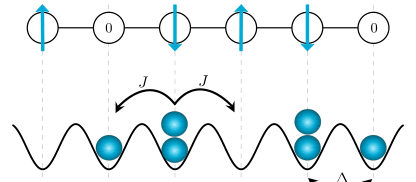
<figcaption class="paper-figure-caption"><b>Fig 4.</b> Figure 4. Schematic illustration of the spin-1 model defined in Eq. (9) and of its constrained-boson representation in an optical-lattice potential. The spin model features a trans- verse spin-exchange coupling J and a longitudinal antifer- romagnetic interaction ∆. The local spin states |Sz i ⟩are mapped onto the bosonic occupation states |ni⟩according to |Sz i = +1⟩↔|ni = 0⟩, |Sz i = 0⟩↔|ni = 1⟩, and |Sz i = −1⟩↔|ni = 2⟩, as prescribed by the Holstein– Primakoff transformation [97].</figcaption>
</figure>
<figure class="paper-figure-card">

<figcaption class="paper-figure-caption"><b>Fig 5.</b> Figure 5. (a) Neutral gap ∆EN (blue) and spin gap ∆ES (red) at T = 0 for HXXZ as a function of ∆. For values of ∆ in the green region, the model exhibits the SPT phase HIT =0 in the ground state, while in the orange region we observe an antiferromagnetic phase. The neutral gap closes at ∆≃1.18 in correspondence to the phase transition between the HIT =0 and the AF. The values of the energy gaps are obtained by fitting data from different chain lengths towards the thermodynamical limit. (b) Phase diagram of the same model at finite temperature. For low values of T, the two ground state phases extend to finite temperatures (HIT =0 in the green region, AF in the orange one), while for large...</figcaption>
</figure>
</div>

<p><strong>Summary.</strong> This paper demonstrates that temperature can act as a powerful control parameter to engineer effective topological phases in ultracold atomic quantum simulators. By analyzing models like the SSH chain using finite-temperature MPS methods, the authors show that intermediate temperature windows can stabilize topological features absent at absolute zero. This establishes a new route for exploring quantum phases using thermal fluctuations in cold atom setups.</p>
<p><strong>Why it may be interesting.</strong> This work directly bridges the gap between zero-temperature topological order and finite-temperature physics, suggesting that thermal control is a viable, experimentally accessible knob for quantum phase engineering in AMO platforms.</p>
<details>
<summary>Detailed structure</summary>
<p><strong>Main problem.</strong> To investigate whether temperature itself can serve as a resource for engineering effective topological quantum phases in many-body quantum systems, potentially yielding phases that do not exist at zero temperature.</p>
<p><strong>Main result.</strong> The study identifies a novel mechanism where finite-temperature thermal fluctuations can induce effective topological phases (SPT phases) in systems that are topologically trivial or possess different phases at T=0.</p>
<p><strong>Method.</strong> The research employs finite-temperature matrix-product-state (MPS) calculations and compares results with zero-temperature DMRG analyses to track topological markers.</p>
<p><strong>Model / system.</strong> The work focuses on ultracold atomic quantum systems, modeling specific Hamiltonians like the interacting bosonic Su-Schrieffer-Heeger (SSH) chain and spin-1 XXZ chain, which are implementable in optical lattices or Rydberg atom arrays.</p>
<p><strong>Key observables.</strong> Long-range order (LRO) of non-local string correlation functions (SCFs), excitation gaps ($\Delta E_{Cb}, \Delta E_{Nb}$), and the degeneracy of the entanglement spectrum.</p>
<p><strong>Important parameters / regimes.</strong> Temperature ($T>0$) relative to zero temperature ($T=0$), and the magnitude of various excitation gaps which define intermediate-temperature windows.</p>
<p><strong>Assumptions / limitations.</strong> The analysis relies on the MPS method to simulate the thermal state via purification and assumes that the topological signatures observed at finite T are robust indicators of effective phases.</p>
<p><strong>Figures summary.</strong> Figures schematically illustrate the optical superlattice potential for the dimerized model, showing hopping amplitudes and interaction terms, and likely compare gap structures across different temperature regimes.</p>
<p><strong>Paper structure.</strong> The paper progresses by introducing the physical platform and models, detailing the necessary theoretical tools (MPS, correlation functions), presenting the core finding—that temperature controls topology—through specific model analyses (SSH, XXZ), and concluding with the general implications for realizing effective topological phases.</p>
</details>
<details>
<summary>Abstract</summary>
<p>Ultracold atomic quantum systems offer an unprecedentedly powerful platform for exploring interacting symmetry-protected topological phases. Here, we show that their characteristic control over temperature provides a resource for engineering effective topological regimes with no zero-temperature counterpart. Employing finite-temperature matrix-product-state calculations, we investigate experimentally accessible Hamiltonians - the interacting bosonic Su-Schrieffer-Heeger and spin-1 XXZ chains - that host a topological phase at zero temperature, as well as a fermionic dipolar ladder model whose ground state exhibits no topological order. By tracking complementary topological markers, we identify an intriguing mechanism rooted in the structure of the zero-temperature phase diagrams: in finite-size systems, excitation gaps with different magnitudes define an intermediate-temperature window where the correlations associated with the lower gap are suppressed, while those protected by the larger gap persist. This enables the emergence of effective finite-temperature regimes exhibiting topological features that are either absent or qualitatively different from those at zero temperature. Our results establish a novel route toward exploring effective topological phases in ultracold atomic quantum systems.</p>
</details>
<p><sub><a href="#top">↑ back to top</a></sub></p>

<p><a id="paper-2609.10079"></a></p>
<h3 id="loss-correcting-fault-tolerant-quantum-computing-architecture-for-neutral-atoms"><a href="http://arxiv.org/abs/2609.10079v1">Loss-correcting fault-tolerant quantum computing architecture for neutral atoms</a></h3>
<p><strong>Authors:</strong> Sanaa Sharma, Yutaka Hirano, Akihisa Goban, Hayata Yamasaki, Shinichi Sunami, Prakash Murali<br>
<strong>Type:</strong> theory · <strong>Category:</strong> quantum information and computing · <strong>PDF:</strong> <a href="https://arxiv.org/pdf/2609.10079v1">https://arxiv.org/pdf/2609.10079v1</a><br>
<strong>Analysis basis:</strong> full PDF text, analyzed in chunks
<strong>Topic relevance:</strong> 🔥 <code>QC/QI experiment</code> <strong>4/5</strong> · <code>Rydberg arrays</code> <strong>1/5</strong> · <code>analog quantum simulation</code> <strong>1/5</strong> · <code>quantum measurements</code> <strong>1/5</strong></p>
<div class="figure-strip-hint">↔ Scroll figures horizontally</div>
<div class="paper-figures-scroll">
<figure class="paper-figure-card">
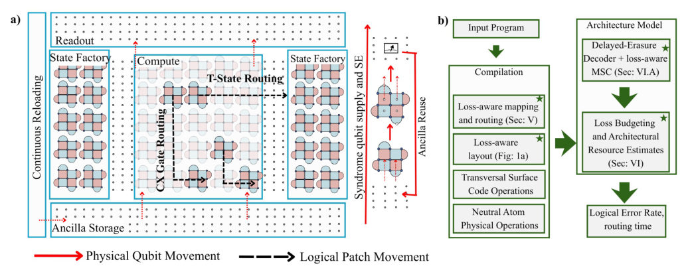
<figcaption class="paper-figure-caption"><b>Fig 1.</b> Fig. 1: a) Loss-aware layout: all logical operations happen inside the compute zone, where logical qubits are shuttled across other qubits for transversal CXs/ T-state routing. Ancilla qubits are measured in readout zone, and reused following a reinitialization in storage zone. b) Loss-aware layout modeling and compilation framework. Starred boxes: this work’s contribution.</figcaption>
</figure>
<figure class="paper-figure-card">
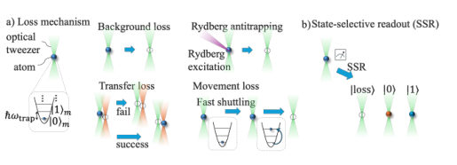
<figcaption class="paper-figure-caption"><b>Fig 2.</b> Fig. 2: Atom loss mechanisms and state-selective readout.</figcaption>
</figure>
<figure class="paper-figure-card">
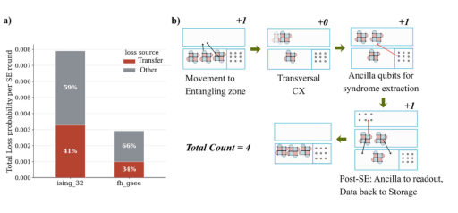
<figcaption class="paper-figure-caption"><b>Fig 3.</b> Fig. 4: a) Transfer loss is a major source of loss because of recurrent movement between AOD-SLM traps. b) In zoned layout, transfer loss for each qubit is counted 4× per gate.</figcaption>
</figure>
<figure class="paper-figure-card">
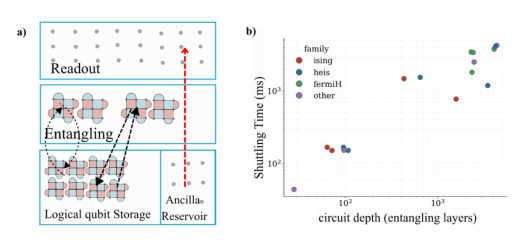
<figcaption class="paper-figure-caption"><b>Fig 4.</b> Fig. 3: a) Current zoned architecture layout: entangling op- erations take place in a separate zone, increasing the routing overhead. b) Shuttling time scales with circuit depth.</figcaption>
</figure>
<figure class="paper-figure-card">

<figcaption class="paper-figure-caption"><b>Fig 5.</b> Fig. 5: a) Transversal gate implementation in compute zone. b) Two movements facilitated by AODs in compute zone: Transversal gates (green crossed AODs) and T-state routing to buffer zone (red crossed AODs). c) S and T Gate teleportation takes place in buffer zone. d) Maximum number of RF tones enable parallel gate movements by an AOD.</figcaption>
</figure>
</div>

<p><strong>Summary.</strong> This paper presents a novel, loss-aware framework for designing fault-tolerant quantum computers using neutral atoms. It overcomes the limitation of existing architectures by treating qubit loss as a dynamic resource budget rather than a fixed error parameter. By co-designing the layout, compilation, and decoding process, the authors achieve significant reductions in both accumulated loss and logical error rates.</p>
<p><strong>Why it may be interesting.</strong> This work directly addresses the critical gap between theoretical fault-tolerance requirements and the practical, loss-dominated realities of physical quantum hardware, providing actionable architectural guidelines for neutral atom platforms.</p>
<details>
<summary>Detailed structure</summary>
<p><strong>Main problem.</strong> The primary challenge is developing a fault-tolerant quantum computing architecture for neutral atoms that can effectively manage and correct for qubit loss, which is a dominant error source ignored by standard error correction and compilation methods.</p>
<p><strong>Main result.</strong> The proposed loss-aware framework improves accumulated loss per syndrome-extraction round by up to 2.15X and reduces logical error rates by over two orders of magnitude compared to current zoned architectures.</p>
<p><strong>Method.</strong> The authors developed a comprehensive, end-to-end loss-aware pipeline that co-designs the physical layout, compiler optimizations, and decoding strategy to treat loss as a dynamic, controllable budget.</p>
<p><strong>Model / system.</strong> The system utilizes neutral-atom arrays trapped in optical tweezers, employing a loss-tolerant transversal-gate architecture that minimizes physical shuttling by keeping operations localized within the compute zone.</p>
<p><strong>Key observables.</strong> Accumulated loss per syndrome-extraction round, logical error rates, and CX routing time.</p>
<p><strong>Important parameters / regimes.</strong> RF tone budget, AOD bandwidth constraints, and the required continuous atom reloading rates (up to $10^7$ atoms/s for certain benchmarks).</p>
<p><strong>Assumptions / limitations.</strong> The analysis assumes that optimizing the system to operate in situ (without separate storage/entangling zones) is feasible and that the loss budget can be controlled end-to-end.</p>
<p><strong>Figures summary.</strong> Figures illustrate the proposed loss-aware layout, the end-to-end compilation pipeline, and quantitative comparisons showing improvements in loss and routing time versus zoned baselines.</p>
<p><strong>Paper structure.</strong> The paper first identifies the failure of existing models to account for loss, then proposes the loss-aware framework, detailing the co-design of layout, compilation, and decoding, and finally presenting quantitative results showing significant performance gains.</p>
</details>
<details>
<summary>Abstract</summary>
<p>Neutral-atom arrays are a leading qubit technology for large-scale, fault-tolerant quantum computing (FTQC). A dominant error source on this platform is qubit loss, which accrues with every operation and movement. The presence of loss undermines the promises of existing architectural work. Standard error correction targets stochastic Pauli errors and cannot correct loss, so most FTQC performance analyses are not directly compatible with it. Moreover, compilation and routing decisions, which strongly affect overall loss, are typically optimized against Pauli-error cost models and often remain loss-agnostic, potentially increasing exposure to the loss channel.   In this work, we comprehensively model the effect of qubit loss on neutral-atom FTQC and develop a loss-tolerant transversal-gate architecture. We treat loss not as a predetermined error parameter but as a dynamic budget spent across a whole program, allowing us to control it by co-designing layout, compilation, and decoding. We target a physical implementation with no separate storage and entangling zones, eliminating the repeated SLM-AOD handoffs and long-distance shuttling that dominate loss in other layouts. We develop compiler optimizations that maximize gate parallelism while respecting the RF tone budget and AOD bandwidth constraints. Our work couples these with a loss-aware, delayed-erasure decoder and an end-to-end loss-aware magic state cultivation protocol. Overall, we improve accumulated loss per syndrome-extraction round by up to 2.15X against a zoned baseline and reduce logical error rates by over two orders of magnitude versus current architectures. Our framework also informs concrete device targets such as continuous reloading rates, AOD counts, and shuttling trajectory choices. We expect these insights to matter for system architects as neutral-atom hardware scales.</p>
</details>
<p><sub><a href="#top">↑ back to top</a></sub></p>

<p><a id="paper-2609.09663"></a></p>
<h3 id="realization-theory-for-quantum-filtering-classifying-continuously-monitored-bosonic-systems"><a href="http://arxiv.org/abs/2609.09663v1">Realization Theory for Quantum Filtering: Classifying Continuously Monitored Bosonic Systems</a></h3>
<p><strong>Authors:</strong> Jacob Emerson<br>
<strong>Type:</strong> theory · <strong>Category:</strong> other · <strong>PDF:</strong> <a href="https://arxiv.org/pdf/2609.09663v1">https://arxiv.org/pdf/2609.09663v1</a><br>
<strong>Analysis basis:</strong> full PDF text, analyzed in chunks
<strong>Topic relevance:</strong> 🔥 <code>quantum measurements</code> <strong>4/5</strong> · <code>correlated / nonlocal dissipation</code> <strong>1/5</strong> · <code>driven-dissipative phase transition</code> <strong>1/5</strong> · <code>methods for driven-dissipative</code> <strong>1/5</strong></p>
<div class="figure-strip-hint">↔ Scroll figures horizontally</div>
<div class="paper-figures-scroll">
<figure class="paper-figure-card">

<figcaption class="paper-figure-caption"><b>Fig 1.</b> FIG. 1. Single-mode schematic of the finite-rank and infinite- rank Hamiltonian sectors. Each lattice point (ℓ, k) repre- sents a Weyl-ordered monomial Sym(XℓP k) appearing in the Hamiltonian. The finite sectors shown are the Gaussian class and the CMM classes aligned with X- and P-homodyne mon- itoring. Monomials outside these sectors mix the measured and conjugate quadratures in a way that produces infinite observable Hankel rank in the classification theorem.</figcaption>
</figure>
<figure class="paper-figure-card">

<figcaption class="paper-figure-caption"><b>Fig 2.</b> FIG. 2. Exact and effective observable memory on physical records. (a) Relative singular spectra for two finite exact controls and two nonlinear mixing systems. The Gaussian and CMM responses terminate after two directions, whereas Kerr and Duffing retain decaying tails. (b) Median and 10th–90th percentile Kerr spectra over 24 physical homodyne records. (c) The corresponding effective dimension dϵ. (d) Direct central-finite-difference validation of the discrete response kernel. All panels use ideal monitoring and separated past and future windows. Exact zeros of the analytic CMM kernel are shown at the plotting floor.</figcaption>
</figure>
<figure class="paper-figure-card">

<figcaption class="paper-figure-caption"><b>Fig 3.</b> FIG. 3. Finite prediction in the Hankel-selected coordinates. Median scaled trajectory error E(r) versus L2 record-perturbation radius r for (a) Kerr and (b) Duffing physical records. The quadratic and cubic curves use the same d = d10−3 coordinates as the linear response; their shading spans the 10th–90th percentiles, while the linear curve is a median-only baseline. (c) Response along the first omitted direction when d −1, d, or d + 1 directions are retained at r = 0.03; upper error bars reach the 90th percentile. (d) Empirical counts of the independently selected local dimensions over 24 Kerr and 20 Duffing records. The dotted line marks the target error 10−3.</figcaption>
</figure>
<figure class="paper-figure-card">
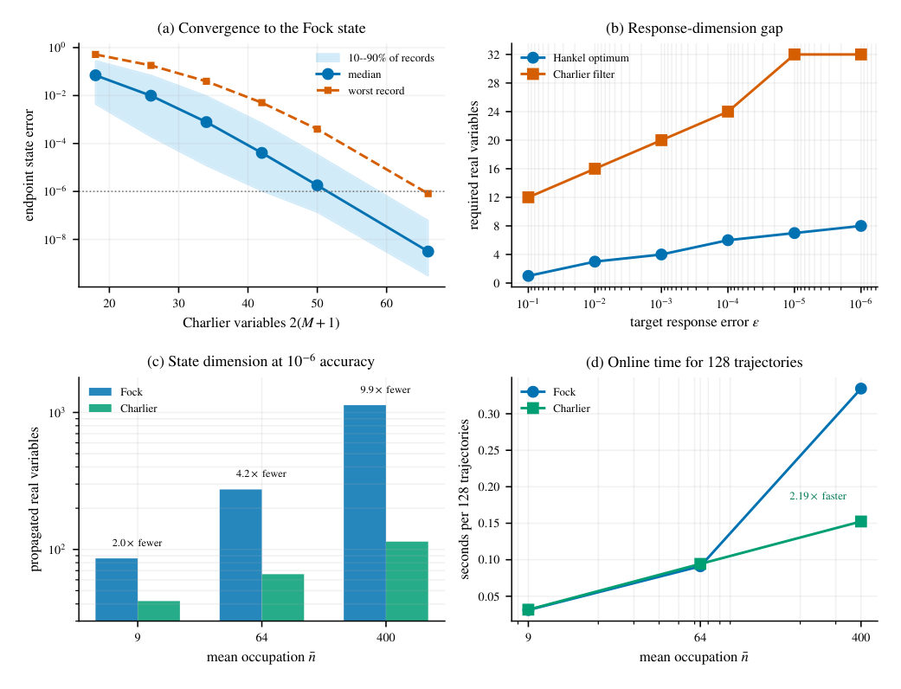
<figcaption class="paper-figure-caption"><b>Fig 4.</b> FIG. 4. Poisson–Charlier approximation of monitored Kerr dynamics. (a) Phase-aligned endpoint state error over 40 physical heterodyne Kerr records. (b) Real variables required by the Charlier response and by the optimal rank-d response approximation on the same record. (c) Accuracy-matched Fock and Charlier state dimensions at fixed accumulated mean-field phase. (d) Their separately measured online times for a batch of 128 trajectories, with reusable operator construction excluded. Panels (c) and (d) use a common 90th-percentile state tolerance of 10−6.</figcaption>
</figure>
<figure class="paper-figure-card">

<figcaption class="paper-figure-caption"><b>Fig 5.</b> FIG. 5. Additional checks of the observable-response spectrum. (a) For the cubic CMM control, the first two singular values remain finite while the apparent third decreases by approximately four under each time-step halving, as expected for an exact rank-two response computed with a second-order step. (b) Median Kerr spectra for the future observables X, P, N, and X2</figcaption>
</figure>
</div>

<p><strong>Summary.</strong> This paper develops a realization theory framework to classify continuously monitored bosonic systems based on whether their observable evolution can be captured by a finite-dimensional filter. By introducing the Hankel operator, the authors establish a sharp boundary: only Gaussian and Conditional Momentum Moment systems admit exact finite filters. The singular values of this operator quantify the optimal approximation error when the system exceeds this finite boundary.</p>
<p><strong>Why it may be interesting.</strong> This work provides a rigorous, mathematical boundary for what can be described by simple, low-dimensional filters in open quantum systems, which is crucial for designing practical quantum control and measurement schemes.</p>
<details>
<summary>Detailed structure</summary>
<p><strong>Main problem.</strong> The paper addresses the fundamental question of determining whether a continuously monitored quantum system admits an exact, finite-dimensional filter describing its observable evolution.</p>
<p><strong>Main result.</strong> The realizability is classified by the rank of the linearized observable Hankel operator ($\mathcal{K}_O$); Gaussian and Conditional Momentum Moment systems admit finite filters, while generic nonlinear dynamics lead to infinite response rank.</p>
<p><strong>Method.</strong> The authors formulate the problem as a realization theory problem, utilizing the Hankel operator $\mathcal{K}_O$ to provide a coordinate-independent diagnostic for the required dimensionality of the filter.</p>
<p><strong>Model / system.</strong> The system analyzed is a continuously monitored bosonic system whose dynamics are governed by a Hamiltonian $H$ derived from a polynomial $h(x, p)$ and subject to damping and homodyne monitoring.</p>
<p><strong>Key observables.</strong> The linearized observable Hankel operator ($\mathcal{K}_O$), the singular values of $\mathcal{K}_O$, and the conditional expectation values of observables ($\langle O 
angle_t$).</p>
<p><strong>Important parameters / regimes.</strong> Damping rate ($\kappa$), detection efficiency ($\eta$), bath occupation ($ar{n}$), and the polynomial degree of the Hamiltonian.</p>
<p><strong>Assumptions / limitations.</strong> The analysis relies on viewing the problem through the lens of realization theory and analyzing the structure of the observable response map, particularly for polynomial Hamiltonians.</p>
<p><strong>Figures summary.</strong> Figures illustrate the convergence of the observable-response spectrum (Kerr spectra) under varying time steps, monitoring efficiencies, and for different observables, confirming the theoretical predictions.</p>
<p><strong>Paper structure.</strong> The paper establishes the realization problem, introduces the Hankel operator $\mathcal{K}_O$ as the diagnostic tool, classifies the finite-dimensional systems (Gaussian/CMM), and then uses numerical examples (Kerr/Duffing oscillators) to demonstrate the quantitative measure of approximation error beyond the exact finite classes.</p>
</details>
<details>
<summary>Abstract</summary>
<p>Exact finite-dimensional descriptions exist for a few important classes of continuously monitored quantum systems, but there is no general criterion separating systems that admit such filters from those that do not. We formulate this question as a realization problem and introduce the linearized observable Hankel operator $K_O$, which maps changes in the past measurement record to changes in a future conditional observable. For polynomial bosonic systems under continuous quadrature monitoring, this gives a sharp boundary between finite and infinite realizability. Gaussian dynamics and the Conditional Momentum Moment class admit exact finite-dimensional filters, while nonlinear dynamics outside these classes generically produce infinitely many independent response directions and admit no robust finite-dimensional $C^1$ observable- or state-level filter. The singular values of $K_O$ then extend the same realization framework to approximation, giving the optimal rank-$d$ local-response error beyond the finite classes. Numerical experiments with the Kerr and Duffing oscillators, together with a dynamics-adapted Poisson--Charlier construction for Kerr dynamics, show how this observable-level benchmark interacts with concrete reduced representations. Together, these results identify the boundary of exact quantum filtering and quantify finite-dimensional approximation beyond it.</p>
</details>
<p><sub><a href="#top">↑ back to top</a></sub></p>

<p><a id="paper-2609.09371"></a></p>
<h3 id="materials-for-quantum-information-science-roles-in-the-quantum-evolution-20"><a href="http://arxiv.org/abs/2609.09371v1">Materials for Quantum Information Science: Roles in the Quantum Evolution 2.0</a></h3>
<p><strong>Authors:</strong> Thang Pham, Vsevolod Ivanov, Dominic P. Goronzy, Abhiram Devata, Joshua Feldon, David Barton, You Zhou<br>
<strong>Type:</strong> both · <strong>Category:</strong> quantum information and computing · <strong>PDF:</strong> <a href="https://arxiv.org/pdf/2609.09371v1">https://arxiv.org/pdf/2609.09371v1</a><br>
<strong>Analysis basis:</strong> full PDF text, analyzed in chunks
<strong>Topic relevance:</strong> 🔥 <code>QC/QI experiment</code> <strong>4/5</strong> · <code>analog quantum simulation</code> <strong>1/5</strong> · <code>correlated / nonlocal dissipation</code> <strong>1/5</strong></p>
<div class="figure-strip-hint">↔ Scroll figures horizontally</div>
<div class="paper-figures-scroll">
<figure class="paper-figure-card">
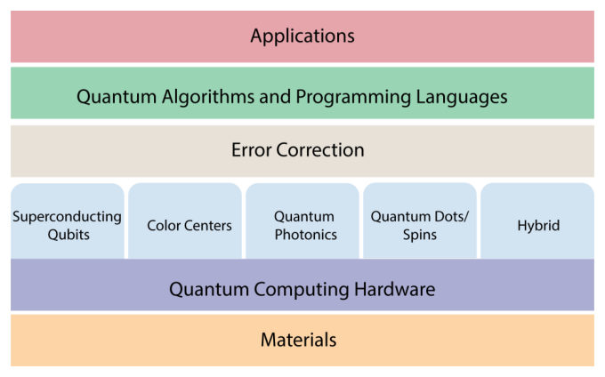
<figcaption class="paper-figure-caption"><b>Fig 1.</b> Figure 1: Ecosystem of Quantum Evolution 2.0. The &quot;Materials&quot; block is the focus of this review. Images adapted and modified with permission from ref2 .</figcaption>
</figure>
<figure class="paper-figure-card">
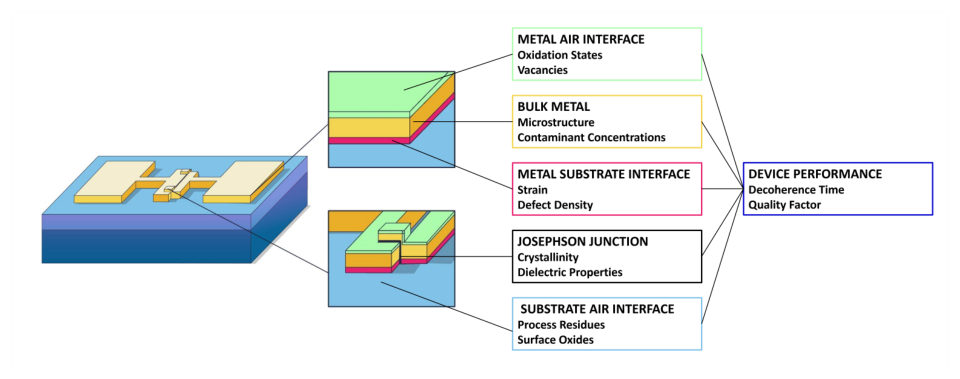
<figcaption class="paper-figure-caption"><b>Fig 2.</b> Figure 2: Superconducting qubit performance is a function of the properties of the constituent materials and the surfaces and interfaces within the qubit device. The future of improved performance lies in understand these structure-property-performance relationships and developing novel materials and fabrication strategies to mitigate decoherence.</figcaption>
</figure>
<figure class="paper-figure-card">

<figcaption class="paper-figure-caption"><b>Fig 3.</b> Figure 3: Comparison of some experimentally validated color center defect properties in diamond (C), 4H silicon carbide (4H-SiC), silicon (Si), and hexagonal boron nitride (hBN). The plot compares the optical radiative lifetime against the zero-phonon-line emission for each defect. For each defect, the marker shape indicates the spin state, the marker size represents the smallest experimentally measured linewidth on a logarithmic scale, and the marker color corresponds to the T1 spin-relaxation time (if known).</figcaption>
</figure>
<figure class="paper-figure-card">
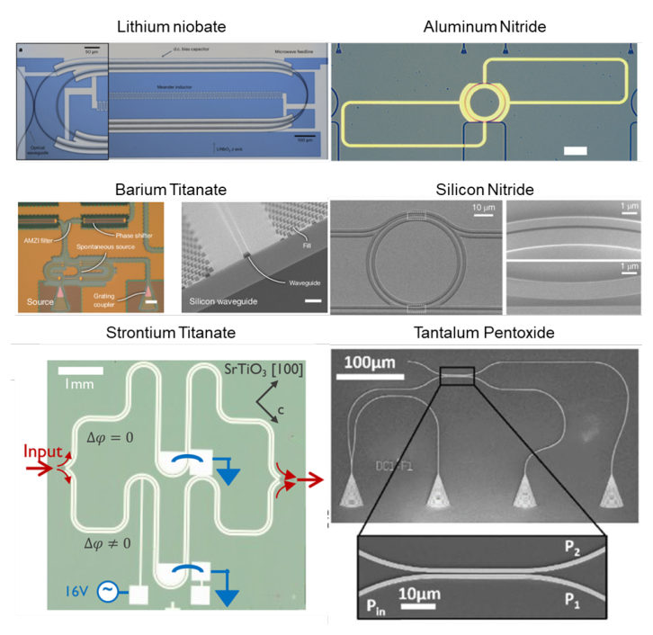
<figcaption class="paper-figure-caption"><b>Fig 4.</b> Figure 4: Integrated waveguide materials primarily discussed in this review. Active materials include wide bandgap oxides and nitrides that feature nonlinear susceptibilities that can leverage external elec- tric fields to control optical properties. Passive materials, including tantalum pentoxide, offer potential advantages as low loss and low noise quantum photonic systems. Images taken adapted with permission from:164(lithium niobate),165(barium titanate),166(strontium titanate),167(aluminum nitride),168(silicon ni- tride), and169(tantalum pentoxide).</figcaption>
</figure>
<figure class="paper-figure-card">
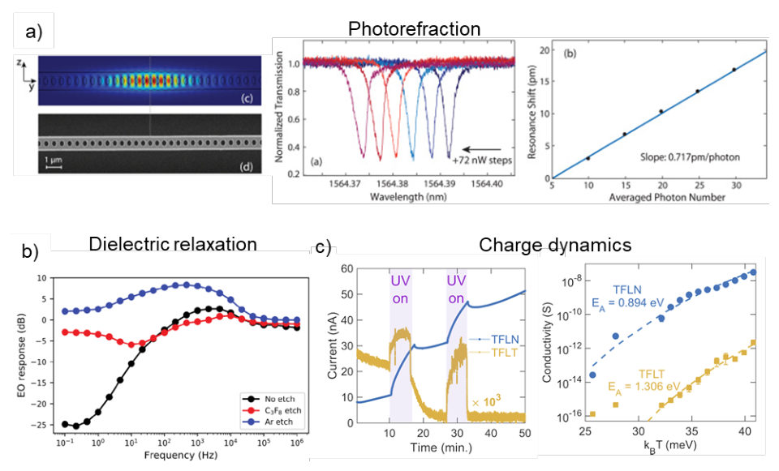
<figcaption class="paper-figure-caption"><b>Fig 5.</b> Figure 5: photorefraction and drift in thin film lithium niobate. a) photorefraction is observed in nanocavities with nearly single photon level tuning. b) dielectric relaxation, as measured as a frequency dependence of the electro-optic response of a modulator, depends on both device geometry and chemistries used to etch and define the contact interface. c) Charge dynamics play a significant role in unwanted time-dependent responses in modulators. UV light modifies conductivity and reported lower activation energies in differing materials defines the magnitude of drift. These phenomena motivate a materials-level characterization of device response improvements, correlating device outcomes...</figcaption>
</figure>
</div>

<p><strong>Summary.</strong> This review analyzes the materials science challenges hindering the scaling of quantum processors across various platforms, including superconducting circuits and 2D materials. It argues that performance is now limited by poorly controlled interfaces and defects, necessitating a fundamental understanding of structure-coherence relationships. The paper calls for new characterization tools and mechanistic theories to advance quantum computing hardware.</p>
<p><strong>Why it may be interesting.</strong> It directly addresses the physical realization bottleneck for solid-state quantum computation, linking fundamental condensed matter physics (defects, interfaces) to device-level quantum performance metrics.</p>
<details>
<summary>Detailed structure</summary>
<p><strong>Main problem.</strong> The field of Quantum Information Science is transitioning to building scalable multi-qubit processors, where performance is now limited by poorly controlled surfaces, interfaces, and defects in underlying materials.</p>
<p><strong>Main result.</strong> A shared 'structure-coherence problem' exists across superconducting circuits, 2D materials, and other quantum platforms, requiring a bottom-up materials approach to control atomic structure.</p>
<p><strong>Method.</strong> The review surveys materials challenges across multiple quantum platforms, identifying dominant decoherence mechanisms and proposing necessary cross-platform characterization methodologies.</p>
<p><strong>Model / system.</strong> The paper covers superconducting circuits (e.g., transmon qubits), quantum defects, 2D materials (e.g., graphene, TMDs), and heterostructures. The core focus is on the material science limitations governing coherence in these solid-state quantum systems.</p>
<p><strong>Key observables.</strong> Decoherence time ($T_2$), Quality factor ($Q$), low-power loss (TLS loss), and quantized electronic/magnetic properties.</p>
<p><strong>Important parameters / regimes.</strong> Atomic-scale structure, interface chemistry, disorder, and the energy scales associated with defects (e.g., TLS).</p>
<p><strong>Assumptions / limitations.</strong> The primary limitation is the inability to quantitatively connect a specific atomic-scale structure to a measured change in coherence across all platforms.</p>
<p><strong>Figures summary.</strong> Figure 1 illustrates the 'Ecosystem of Quantum Evolution 2.0' with materials at the center; Figure 2 shows that qubit performance depends critically on material properties and interface quality.</p>
<p><strong>Paper structure.</strong> The review progresses by first establishing the shift to Quantum Evolution 2.0, then detailing materials challenges for specific platforms (superconducting circuits, 2D materials), identifying common material chemistry issues, and concluding with three necessary future advancements.</p>
</details>
<details>
<summary>Abstract</summary>
<p>Quantum information science is entering a second phase, the Quantum Evolution 2.0, in which the challenge has shifted from demonstrating coherent control of individual quantum states to building scalable multi-qubit processors and networks. This transition places materials science at the center of the field. Across superconducting circuits, quantum defects, quantum photonic devices, and emerging materials platforms, including two-dimensional materials and heterostructures, performance is now limited less by device design than by poorly controlled surfaces, buried interfaces, and defects whose atomic identities remain incompletely known. This review surveys the materials challenges of these quantum platforms together with the characterization methods needed to resolve them. For each platform we identify the dominant decoherence mechanisms, the current state of materials understanding, and the most pressing open materials problems. A cross-platform comparison then reveals a shared structure-coherence problem. The implicated material chemistry recurs across platforms, involving light elements in disordered or buried environments, yet no platform can quantitatively connect a specific atomic-scale structure to a measured change in coherence. We close by identifying three needs, mechanistic understanding of decoherence at the atomistic level, high-throughput proxy metrics predictive of device performance, and characterization tools built for quantum materials, whose resolution would advance coherence, scalability, and integration across all platforms.</p>
</details>
<p><sub><a href="#top">↑ back to top</a></sub></p>

<p><a id="paper-2609.09495"></a></p>
<h3 id="certifying-bipartite-entanglement-on-a-superconducting-processor-from-a-corrected-qaoa-cost-layer"><a href="http://arxiv.org/abs/2609.09495v1">Certifying bipartite entanglement on a superconducting processor from a corrected QAOA cost layer</a></h3>
<p><strong>Authors:</strong> Carlos-Miguel Lorenzo<br>
<strong>Type:</strong> experiment · <strong>Category:</strong> quantum information and computing · <strong>PDF:</strong> <a href="https://arxiv.org/pdf/2609.09495v1">https://arxiv.org/pdf/2609.09495v1</a><br>
<strong>Analysis basis:</strong> full PDF text, analyzed in chunks
<strong>Topic relevance:</strong> 🔥 <code>QC/QI experiment</code> <strong>4/5</strong> · <code>quantum measurements</code> <strong>1/5</strong></p>
<div class="figure-strip-hint">↔ Scroll figures horizontally</div>
<div class="paper-figures-scroll">
<figure class="paper-figure-card">
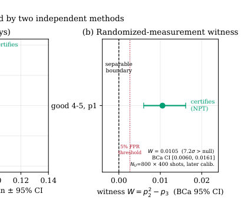
<figcaption class="paper-figure-caption"><b>Fig 1.</b> Figure 1: Entanglement is certified on the good coupler at depth one and nowhere else. (a) Per-arm two-qubit reduced-state negativity from tomography, day-level mean with 95% confidence interval over six calibrations: the good edge 4-5 at p = 1 certifies (cold and warm), while the p = 3 arm, the coupling-off J = 0 twin and the degraded 6-8 edge are separable. (b) The independent randomized-measurement p3-PPT witness W = p2 2 −p3 on the good edge on a later calibration: W = 0.0105 with BCa 95% CI, clear of the Werner PPT-boundary null but — at this magnitude — underpowered against a near-pure-separable null, so reported as consistent with entanglement.</figcaption>
</figure>
<figure class="paper-figure-card">

<figcaption class="paper-figure-caption"><b>Fig 2.</b> Figure 2: Reducing the manipulated CZ drive amplitude reduces the certified negativity along a positive, well-fit slope over the probed ladder. Certified two-qubit negativity (PSD, BCa) against the manipulated CZ pulse amplitude factor (the single knob we set), for three couplers of component B (4-5, 5-7, 6-8), two calibration sessions each (filled circles, session 1; open triangles, session 2). Lines are the per-edge weighted fits over the rung window; the legend gives the per-edge slope in certified negativity per unit fractional amplitude. The fits are local linearisations: the drive-to-phase map overshoots π at the nominal amplitude and the certified negativity peaks at |ζ| = π, so the...</figcaption>
</figure>
<figure class="paper-figure-card">

<figcaption class="paper-figure-caption"><b>Fig 3.</b> Figure 3: The certificate collapses by depth three on b08; separately, the depth-three ensemble shows no optimisation signal. Left: the good-edge negativity present at p = 1 is separable by p = 3 (instance b08, day- level over six calibrations) — a within-instance depth collapse. Right: across the N = 16 ensemble measured at p = 3 only, per-instance optimum mass Popt sits at the uniform (1/32) and device-marginal Bernoulli floors (one-sided Wilcoxon versus Bernoulli p = 0.15, not significant); this speaks to p = 3 alone and is not evidence of a decline with depth.</figcaption>
</figure>
<figure class="paper-figure-card">

<figcaption class="paper-figure-caption"><b>Fig 4.</b> Figure 4: The good coupler certifies on every calibration; the degraded coupler never does. Raw two-qubit negativity of the good edge 4-5 (upper) and the degraded edge 6-8 (lower) across the six daily calibrations, with the good-edge grand-mean band. Good above bad on 6/6 days; the separation is reported through the two per-edge day-level intervals (good BCa CI [0.065, 0.091], degraded TOST-equivalent to zero), because the pre-registered paired test is a secondary hypothesis that does not survive multiplicity correction (see text). Between-day standard deviation 0.016.</figcaption>
</figure>
<figure class="paper-figure-card">

<figcaption class="paper-figure-caption"><b>Fig 5.</b> Figure 5: Component B of Red and its couplers. The calibrated connectivity read live from the runcard on 4 August 2026: nine qubits, seven CZ couplers, and the absent 3-4 bridge that splits the chip into components A = {0, 1, 2, 3} and B = {4, 5, 6, 7, 8}. Component B carries the primary instance b08, the good edge 4-5, the degraded edge 6-8 and the 5-7 coupler used in the causal experiment.</figcaption>
</figure>
</div>

<p><strong>Summary.</strong> This paper rigorously certifies bipartite entanglement in a QAOA cost layer on a superconducting processor by measuring two-qubit negativity. Crucially, it establishes a causal, quantitative relationship showing that the measured entanglement strength decreases predictably as the physical CZ pulse amplitude is reduced. This moves quantum hardware characterization beyond simple benchmarking to understanding fundamental physical control.</p>
<p><strong>Why it may be interesting.</strong> This work provides a crucial, quantitative link between abstract quantum algorithm requirements (like entanglement depth) and the measurable, physical parameters (like pulse amplitude) of real-world superconducting hardware, offering a roadmap for device characterization.</p>
<details>
<summary>Detailed structure</summary>
<p><strong>Main problem.</strong> To move beyond simple benchmarking of near-term quantum algorithms by rigorously certifying the physical entanglement generated on superconducting hardware and determining which physical device parameter controls this entanglement.</p>
<p><strong>Main result.</strong> The authors certified bipartite entanglement in the QAOA cost layer and demonstrated a causal, measurable dependence of this entanglement on the CZ pulse amplitude, showing that reducing the amplitude reduces the certified negativity.</p>
<p><strong>Method.</strong> The study used two-qubit tomographic negativity to certify entanglement on a superconducting processor, combined with a pre-registered manipulation experiment varying the CZ pulse amplitude to establish a dose-response relationship.</p>
<p><strong>Model / system.</strong> The experiment was conducted on a nine-qubit superconducting processor ('Red') at the Barcelona Supercomputing Center. The physics is modeled using the QAOA cost layer, which is implemented via controlled-Z (CZ) gates between coupled qubits.</p>
<p><strong>Key observables.</strong> Bipartite entanglement certified via two-qubit tomographic negativity (e.g., 0.077); the slope of negativity vs. CZ pulse amplitude; and the fidelity of statevector reconstruction.</p>
<p><strong>Important parameters / regimes.</strong> The CZ pulse amplitude (the control knob); the depth of the QAOA circuit (depth one vs. depth three); and the specific coupling couplers (e.g., the 'good coupler' 4-5).</p>
<p><strong>Assumptions / limitations.</strong> The analysis relies heavily on pre-registration and provenance tracking to ensure the experimental design preceded data collection. The authors caution that the observed entanglement is not claimed to demonstrate quantum advantage.</p>
<p><strong>Figures summary.</strong> Figures illustrate the connectivity graph of the superconducting chip, the reconstructed two-qubit density matrix showing coherences, and tables summarize the calculated slopes and confidence intervals derived from the dose-response analysis across different couplers.</p>
<p><strong>Paper structure.</strong> The paper establishes the physical context and the need for rigorous certification. It details the entanglement measurement using negativity, followed by the core experimental section where the CZ pulse amplitude is systematically varied to map out the physical control law. Finally, it discusses the limitations, including depth collapse and the lack of quantum advantage.</p>
</details>
<details>
<summary>Abstract</summary>
<p>The Quantum Approximate Optimisation Algorithm is the canonical near-term heuristic, yet on real superconducting hardware its behaviour is set by device physics, not by the algorithm. Hardware demonstrations rarely prove the intended coupling is realised, that genuine entanglement is prepared, or what controls it. We report a pre-registered single-device study on the nine-qubit superconducting processor Red at the Barcelona Supercomputing Center, using its five-qubit component. Across six calibrations we certify bipartite entanglement of a corrected QAOA cost layer on the good coupler at depth one by two-qubit tomographic negativity: 0.077, BCa 95% CI [0.065, 0.091], excluding zero every day, while the coupling-off twin stays separable and the degraded coupler equals zero. We then measure the device physics directly: in a pre-registered manipulation on a fixed Bell preparation (not the QAOA layer), reducing the CZ pulse amplitude causally reduces the certified negativity along a positive, well-fit slope (R^2 = 0.83-0.96), every rung-level interval excluding zero and surviving Holm and Benjamini-Hochberg correction. This is a local linearisation of a peaked response, not a global monotone law: the negativity peaks at conditional phase |zeta| = pi, which the nominal amplitude overshoots. The J=0 twin is a separate off-state control and the fringe visibility is constant, so the effect is coherent. The average gate fidelity is non-monotone in the drive and is reported only as a diagnostic. A per-circuit statevector guardrail excludes a diagonal compilation fault we disclose and repair. A randomized-measurement witness is consistent with entanglement but underpowered. The certificate collapses by depth three, and a pre-registered sixteen-instance depth-three ensemble shows no optimisation signal (one-sided Wilcoxon p = 0.15). We claim no advantage; the instances are classically trivial.</p>
</details>
<p><sub><a href="#top">↑ back to top</a></sub></p>

<p><a id="paper-2609.10072"></a></p>
<h3 id="haar-bayesian-pure-state-prediction-under-relative-entropy-loss-arbitrary-effect-reduction-and-global-optimality"><a href="http://arxiv.org/abs/2609.10072v1">Haar-Bayesian Pure-State Prediction under Relative-Entropy Loss: Arbitrary-Effect Reduction and Global Optimality</a></h3>
<p><strong>Authors:</strong> Masahito Hayashi, Ayanava Dasgupta, Naqueeb Ahmad Warsi<br>
<strong>Type:</strong> theory · <strong>Category:</strong> quantum information and computing · <strong>PDF:</strong> <a href="https://arxiv.org/pdf/2609.10072v1">https://arxiv.org/pdf/2609.10072v1</a><br>
<strong>Analysis basis:</strong> full PDF text, analyzed in chunks
<strong>Topic relevance:</strong> 🔥 <code>quantum measurements</code> <strong>4/5</strong></p>
<div class="figure-strip-hint">↔ Scroll figures horizontally</div>
<div class="paper-figures-scroll">
<figure class="paper-figure-card">

<figcaption class="paper-figure-caption"><b>Fig 1.</b> Low-resolution page preview, page 2</figcaption>
</figure>
<figure class="paper-figure-card">
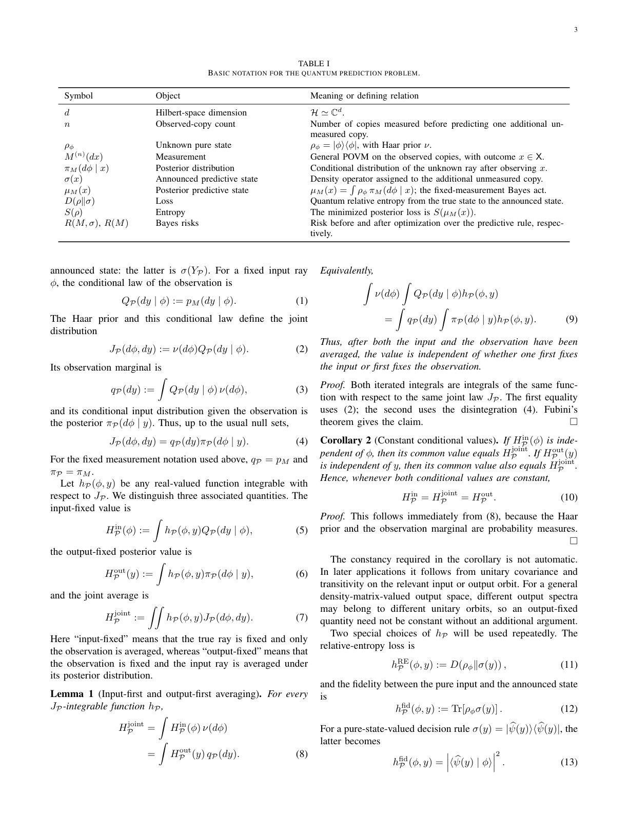
<figcaption class="paper-figure-caption"><b>Fig 2.</b> Low-resolution page preview, page 3</figcaption>
</figure>
<figure class="paper-figure-card">
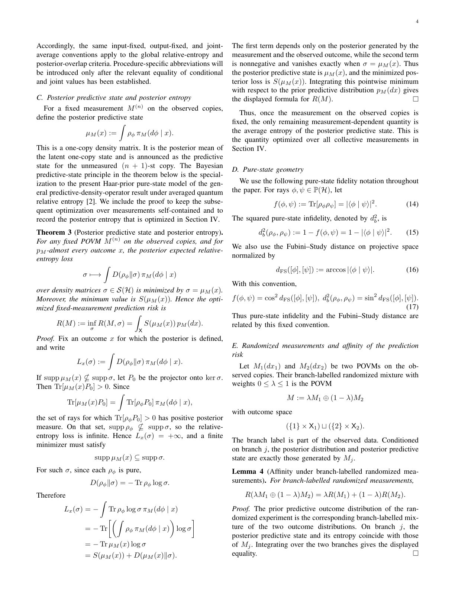
<figcaption class="paper-figure-caption"><b>Fig 3.</b> Low-resolution page preview, page 4</figcaption>
</figure>
<figure class="paper-figure-card">
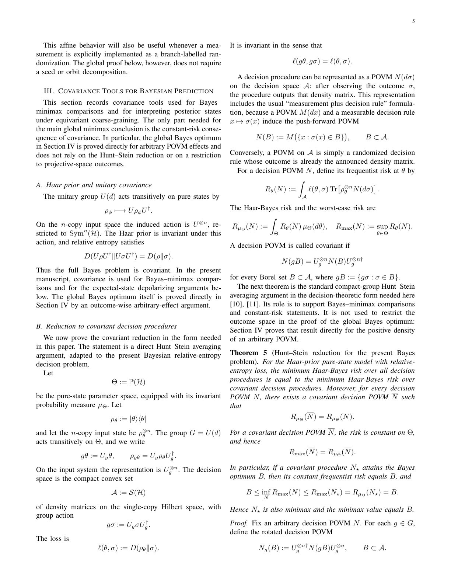
<figcaption class="paper-figure-caption"><b>Fig 4.</b> Low-resolution page preview, page 5</figcaption>
</figure>
<figure class="paper-figure-card">

<figcaption class="paper-figure-caption"><b>Fig 5.</b> Low-resolution page preview, page 6</figcaption>
</figure>
</div>

<p><strong>Summary.</strong> This theoretical paper solves the problem of optimally predicting an unknown pure quantum state given multiple measurements. It proves that the highest-weight covariant Positive Operator-Valued Measure (POVM) achieves the global minimum risk when using the quantum relative entropy as the loss function. This result establishes a fundamental benchmark for quantum state estimation protocols.</p>
<p><strong>Why it may be interesting.</strong> The rigorous derivation of global optimality for quantum state estimation under relative entropy loss provides fundamental tools for quantum measurement theory, which underpins quantum communication and computation.</p>
<details>
<summary>Detailed structure</summary>
<p><strong>Main problem.</strong> The paper determines the optimal measurement strategy (POVM) and subsequent decision rule for predicting an unmeasured copy of an unknown pure quantum state, minimizing the quantum relative-entropy loss.</p>
<p><strong>Main result.</strong> The highest-weight covariant POVM is proven to be globally Bayes optimal over all collective measurements, achieving a specific, calculable minimum risk.</p>
<p><strong>Method.</strong> The analysis employs the 'arbitrary-effect reduction' identity to simplify the problem, allowing the optimization to be performed by comparing the risk to a derived entropy lower bound.</p>
<p><strong>Model / system.</strong> The system involves an unknown pure state $\rho_\phi$ drawn from the Haar distribution in a finite-dimensional Hilbert space of dimension $d$. The process models quantum state estimation using $n$ observed copies and predicting one unmeasured copy.</p>
<p><strong>Key observables.</strong> Quantum relative entropy loss, Bayes prediction risk, and the mean posterior purity.</p>
<p><strong>Important parameters / regimes.</strong> The number of observed copies ($n$), the dimension of the Hilbert space ($d$), and the ratio $r = (n+1)/(n+d)$.</p>
<p><strong>Assumptions / limitations.</strong> The analysis assumes a uniform (Haar) prior over the pure states and relies heavily on the 'arbitrary-effect identity' to simplify the optimization landscape.</p>
<p><strong>Figures summary.</strong> Not specified.</p>
<p><strong>Paper structure.</strong> The paper builds from establishing the optimal decision rule for a fixed measurement, then uses the arbitrary-effect identity to generalize this to optimize over all POVMs, culminating in the proof of global Bayes and minimax optimality.</p>
</details>
<details>
<summary>Abstract</summary>
<p>We study Haar-Bayesian prediction of one unmeasured copy of an unknown finite-dimensional pure quantum state after an arbitrary collective measurement on $n$ observed copies. Performance is evaluated by quantum relative entropy. For a fixed measurement, the Bayes predictive state is the posterior mean and the optimized conditional loss is its entropy. We then optimize the measurement over all POVMs on the symmetric subspace. For every nonzero positive effect $E$, the corresponding posterior predictive state is $μ_E=(I+nρ_E)/(n+d)$, where $ρ_E$ is the normalized one-particle marginal of $E$. Since a pure spectrum majorizes every density-operator spectrum, this identity gives an outcome-wise entropy lower bound. Coherent rank-one effects attain the bound, and their Haar orbit yields the highest-weight covariant POVM. Hence this POVM is globally Bayes optimal over all collective measurements and, by covariance, globally minimax. Its exact risk is $h_d((n+1)/(n+d))$, where $h_d(r)=-r\log r-(1-r)\log((1-r)/(d-1))$. The same arbitrary-effect reduction shows that the highest-weight POVM also maximizes the joint overlap between the latent pure state and its posterior predictive state, equivalently the mean posterior purity, with optimum $((n+1)^2+d-1)/(n+d)^2$.</p>
</details>
<p><sub><a href="#top">↑ back to top</a></sub></p>

<p><a id="paper-2609.10078"></a></p>
<h3 id="why-three-a-two-level-system-with-four-mutually-unbiased-questions"><a href="http://arxiv.org/abs/2609.10078v1">Why three? A two-level system with four mutually unbiased questions</a></h3>
<p><strong>Authors:</strong> Jonte R. Hance<br>
<strong>Type:</strong> theory · <strong>Category:</strong> quantum information and computing · <strong>PDF:</strong> <a href="https://arxiv.org/pdf/2609.10078v1">https://arxiv.org/pdf/2609.10078v1</a><br>
<strong>Analysis basis:</strong> full PDF text, analyzed in chunks
<strong>Topic relevance:</strong> 🔥 <code>quantum measurements</code> <strong>4/5</strong></p>
<div class="figure-strip-hint">↔ Scroll figures horizontally</div>
<div class="paper-figures-scroll">
<figure class="paper-figure-card">
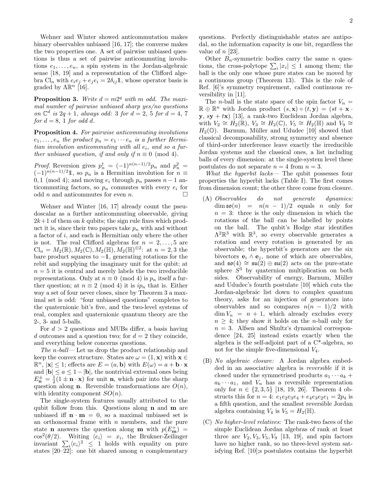
<figcaption class="paper-figure-caption"><b>Fig 1.</b> Low-resolution page preview, page 2</figcaption>
</figure>
<figure class="paper-figure-card">

<figcaption class="paper-figure-caption"><b>Fig 2.</b> Low-resolution page preview, page 3</figcaption>
</figure>
<figure class="paper-figure-card">
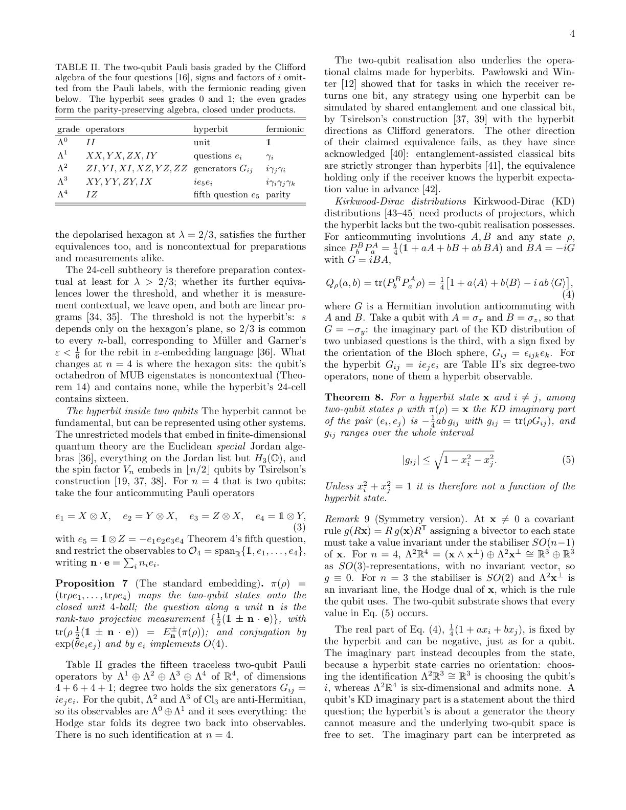
<figcaption class="paper-figure-caption"><b>Fig 3.</b> Low-resolution page preview, page 4</figcaption>
</figure>
<figure class="paper-figure-card">
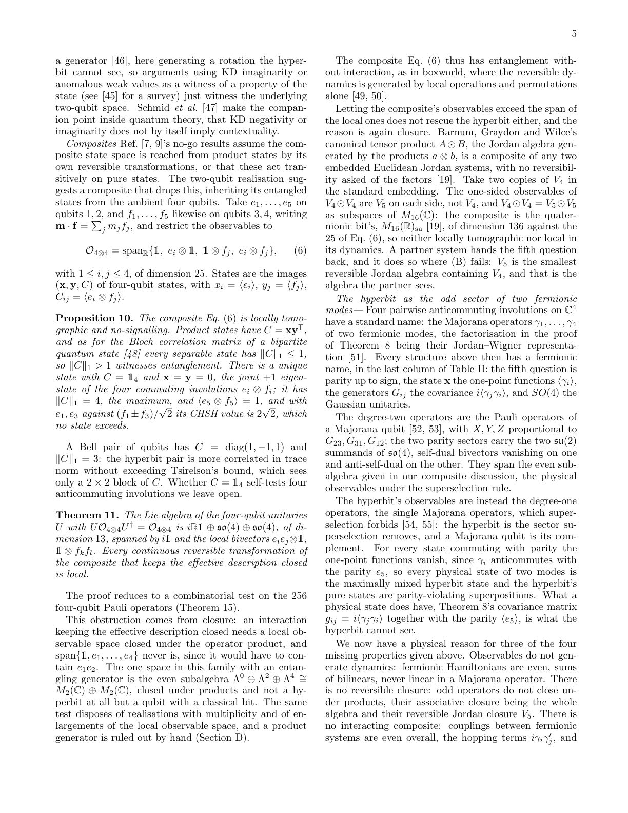
<figcaption class="paper-figure-caption"><b>Fig 4.</b> Low-resolution page preview, page 5</figcaption>
</figure>
<figure class="paper-figure-card">

<figcaption class="paper-figure-caption"><b>Fig 5.</b> Low-resolution page preview, page 6</figcaption>
</figure>
</div>

<p><strong>Summary.</strong> This paper explores the theoretical limits of quantum measurement by examining systems supporting four mutually unbiased questions (the hyperbit), contrasting it with the standard qubit. It shows that while the hyperbit can be mathematically constructed, it fails to satisfy several key physical postulates (like generating dynamics) that the qubit possesses. The work uses advanced tools from algebra and quantum information theory to delineate the boundaries between different quantum models.</p>
<p><strong>Why it may be interesting.</strong> It provides a deep theoretical exploration of the limits of quantum measurement theory, extending the concept of MUBs beyond standard qubit models and linking algebraic structure to physical realizability.</p>
<details>
<summary>Detailed structure</summary>
<p><strong>Main problem.</strong> The paper investigates the maximum number of mutually unbiased questions (MUBs) a two-level system can support, contrasting the standard result of three with the theoretical possibility of four.</p>
<p><strong>Main result.</strong> While standard operator algebra restricts MUBs to an odd number (2, 3, or 5), a hypothetical 'hyperbit' with four MUBs can be constructed, but it lacks key physical properties like dynamics generation and algebraic closure compared to a standard qubit.</p>
<p><strong>Method.</strong> The analysis combines algebraic constraints (Clifford algebras, anticommuting involutions) with geometric modeling (Bloch balls, 24-cell) and quantum information diagnostics (contextuality proofs, Kirkwood-Dirac distributions).</p>
<p><strong>Model / system.</strong> The primary models are the standard qubit (two-level system) and the hypothetical hyperbit (a four-level system), which is shown to embed into a two-qubit system.</p>
<p><strong>Key observables.</strong> Mutually Unbiased Questions (MUBs), Clifford algebra structure, preparation contextuality (measured via inequalities), and the imaginary part of the Kirkwood-Dirac correlation function.</p>
<p><strong>Important parameters / regimes.</strong> The number of MUBs ($n=2, 3, 4, 5$), the dimension of the state space (Bloch ball dimension), and the contextuality threshold ($\lambda > 2/3$).</p>
<p><strong>Assumptions / limitations.</strong> The analysis often assumes preparation noncontextuality when deriving bounds on correlations, and it compares the hyperbit against the full set of single-system postulates.</p>
<p><strong>Figures summary.</strong> TABLE I compares four key properties (A-D) across systems with $n=2, 3, 4, 5$, illustrating the structural differences between the qubit and the hyperbit.</p>
<p><strong>Paper structure.</strong> The paper first establishes the algebraic constraints on MUBs, then introduces the geometric model of the hyperbit, compares its properties to the qubit using diagnostic criteria, and finally analyzes its embedding and contextuality within a two-qubit framework.</p>
</details>
<details>
<summary>Abstract</summary>
<p>Two sharp yes/no questions are mutually unbiased if and only if their involutions anticommute. A set of unbiased questions is therefore a Clifford algebra, whose maximal size is odd, meaning four anticommuting questions typically imply a fifth: the two-level systems of real, complex and quaternionic quantum theory allow two, three and five questions, while four is skipped. Without this operator product restriction, a two-level system with four unbiased questions exists as the four-dimensional Bloch ball, the hyperbit. The single-system postulates that pick out the Jordan state spaces allow such a model, and only energy observability rules it out. We show what it lacks, and realise it inside two qubits: its Kirkwood-Dirac imaginary parts are hidden $\mathfrak{so}(4)$ generators, its composites allow entanglement but no interaction, and its 24-cell of states stays Spekkens preparation contextual down to depolarising strength $2/3$. In fermionic terms, the four questions are the Majorana operators of two modes while the fifth is parity: the four-question system is therefore the sector removed by parity superselection.</p>
</details>
<p><sub><a href="#top">↑ back to top</a></sub></p>

<p><a id="paper-2609.09312"></a></p>
<h3 id="non-hermitian-topology-in-driven-dissipative-systems-correspondence-with-quantum-correlations-and-a-resource-for-entanglement"><a href="http://arxiv.org/abs/2609.09312v1">Non-Hermitian topology in driven-dissipative systems: correspondence with quantum correlations and a resource for entanglement</a></h3>
<p><strong>Authors:</strong> Niladri Chakraborty, Clara C. Wanjura<br>
<strong>Type:</strong> theory · <strong>Category:</strong> other · <strong>PDF:</strong> <a href="https://arxiv.org/pdf/2609.09312v1">https://arxiv.org/pdf/2609.09312v1</a><br>
<strong>Analysis basis:</strong> full PDF text, analyzed in chunks
<strong>Topic relevance:</strong> <code>analog quantum simulation</code> <strong>3/5</strong> · <code>correlated / nonlocal dissipation</code> <strong>3/5</strong> · <code>driven-dissipative phase transition</code> <strong>3/5</strong> · <code>methods for driven-dissipative</code> <strong>3/5</strong> · <code>Keldysh / 2PI / non-Gaussian methods</code> <strong>2/5</strong> · <code>non-equilibrium universality</code> <strong>2/5</strong> · <code>Tavis-Cummings &amp; cavity-many-emitter</code> <strong>1/5</strong> · <code>quantum measurements</code> <strong>1/5</strong></p>
<div class="figure-strip-hint">↔ Scroll figures horizontally</div>
<div class="paper-figures-scroll">
<figure class="paper-figure-card">

<figcaption class="paper-figure-caption"><b>Fig 1.</b> FIG. 1. Directional topological amplifiers generate long-range correlations in their output fields. (a) We consider systems of cou- pled bosonic modes, here, concretely, two sets of bosonic modes ˆaj and ˆbj are coupled with complex hopping and two-mode squeezing (TMS) interactions, see Eq. (7). Waveguides couple input fields as well as input noise into each of the modes. (b) For certain parame- ter regimes, such chains exhibit non-trivial non-Hermitian topology in the form of a winding number, Eq. (3). Here, regimes of non- trivial topology are soley determined through the cooperativity C, the competition between two-mode squeezing and local dissipation and the phase controlling...</figcaption>
</figure>
<figure class="paper-figure-card">
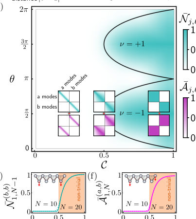
<figcaption class="paper-figure-caption"><b>Fig 2.</b> FIG. 2. Emergence of correlations in non-trivial non-Hermitian topological phases. (a)-c Normal and anomalous correlations, Eq. (11), are a witness of non-Hermitian topological phase transi- tions, Eq. (17). (a) In the trivial phase, the correlations are ex- ponentially attenuated as a function of the distance between the modes, while in non-trivial phase, the correlations Mj,ℓgrow exponentially as a function of distance between modes (for any ν(j −ℓ) &gt; 0). At the transition, the correlations are uniform across the system. For clarity, we only show the normal correla- tions between ˆaj modes, N (a,a) j,ℓ here; normal correlations N (b,b) j,ℓ between ˆbj modes and anomalous correlations...</figcaption>
</figure>
<figure class="paper-figure-card">
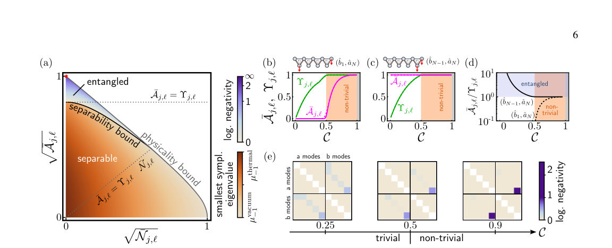
<figcaption class="paper-figure-caption"><b>Fig 3.</b> FIG. 3. Understanding entanglement through competing correlations and mode occupations. (a) When the local squeezing of the output state Aj,j = 0 is zero, the the condition for bi-partite entanglement for a given mode occupation ratio Υj,ℓ, Eq. (24), is purely determined by the normalised correlations, ¯ Aj,ℓand ¯ Nj,ℓ. The colour gradient in the set of entangled state denotes the value of the entanglement monotone logarithmic negativity, which is 0 in the separable region and positive in the entangled region. In the separable region, we instead plot the smallest symplectic eigenvalue with µ−1 = 1/2 corresponding to vacuum, i.e., minimal uncertainty. The state at the apex (red star) also...</figcaption>
</figure>
<figure class="paper-figure-card">
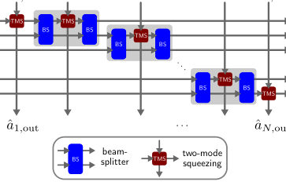
<figcaption class="paper-figure-caption"><b>Fig 4.</b> FIG. 4. Entanglement generation in different operation regimes. (a)-(c) Logarithmic negativity and smallest symplectic eigenvalue µ−1 as a function of the cooperativity for (a) the perfectly unidi- rectional amplifier chain (θ = π</figcaption>
</figure>
<figure class="paper-figure-card">

<figcaption class="paper-figure-caption"><b>Fig 5.</b> FIG. 5. Correlations and entanglement in the bosonic Kitaev Chain. (a) In the bosonic Kitaev chain [69], Eq. (25), neighbouring modes are connected via beamsplitter and two-mode-squeezing in- teractions. (b) Correlations N N</figcaption>
</figure>
</div>

<p><strong>Summary.</strong> This paper establishes a quantum generalization of the connection between non-Hermitian topology and directional amplification. It shows that non-trivial topology generates long-range quantum correlations in driven-dissipative systems, while entanglement remains localized. This provides a powerful theoretical tool for designing quantum devices based on topological principles.</p>
<p><strong>Why it may be interesting.</strong> This work provides a deep theoretical link between topological invariants (non-Hermitian geometry) and measurable quantum resources (correlations/entanglement) in open quantum systems, directly applicable to cavity optomechanics and superconducting circuits.</p>
<details>
<summary>Detailed structure</summary>
<p><strong>Main problem.</strong> The paper extends the understanding of non-Hermitian topology from classical mean-field responses to the quantum realm by analyzing quantum fluctuations, correlations, and entanglement in driven-dissipative systems.</p>
<p><strong>Main result.</strong> Non-trivial non-Hermitian topology leads to exponentially growing, long-range quantum correlations, while entanglement remains local, governed by the competition between these correlations and mode occupation asymmetry.</p>
<p><strong>Method.</strong> The authors utilize quantum Langevin equations, analyzing second moments to calculate normal and anomalous correlations, and employing the winding number to characterize the non-Hermitian topology.</p>
<p><strong>Model / system.</strong> The study focuses on driven-dissipative bosonic chains, exemplified by phase-preserving amplifiers and the bosonic Kitaev chain. The dynamics are governed by a non-Hermitian dynamic matrix H.</p>
<p><strong>Key observables.</strong> Normal and anomalous correlations, entanglement (logarithmic negativity), correlation length ($\xi$), and the topological winding number ($
u$).</p>
<p><strong>Important parameters / regimes.</strong> Cooperativity ($C$), system size ($N$), and the topological phase transition point.</p>
<p><strong>Assumptions / limitations.</strong> The analysis often assumes a directional, cascaded evolution structure for the correlation analysis, and the initial correspondence was limited to mean fields.</p>
<p><strong>Figures summary.</strong> Figures illustrate directional topological amplifiers, the dependence of correlations on distance (showing divergence at phase transitions), and the evolution of entanglement at system boundaries.</p>
<p><strong>Paper structure.</strong> The work progresses from establishing the classical mean-field correspondence to deriving analytic expressions for quantum correlations, analyzing the divergence of the correlation length, and finally detailing the local nature of entanglement in specific models like the Kitaev chain.</p>
</details>
<details>
<summary>Abstract</summary>
<p>Directional amplification, in which signals are amplified selectively depending on their propagation direction, is a key resource for quantum information processing and stands in one-to-one correspondence with non-trivial non-Hermitian topology. So far, this correspondence has concerned the mean fields, and thus classical response. Here we turn to the quantum fluctuations, giving access to correlations and entanglement. For phase-preserving amplifiers, we derive analytic expressions for the normal and anomalous correlations, showing that non-trivial topology produces correlations that grow exponentially with the distance between modes and approach the largest values compatible with the uncertainty relations. The associated correlation length diverges at the topological phase transition. Entanglement nonetheless remains local, set by the competition between normalised anomalous correlations and the asymmetry of the mode occupations. For the bosonic Kitaev chain, a phase-sensitive amplifier, the system instead splits into two halves that are internally fully correlated yet mutually uncorrelated. Our work prepares the ground for exploring the quantum properties of non-Hermitian topological systems with state-of-the-art platforms such as cavity optomechanics and superconducting circuits.</p>
</details>
<p><sub><a href="#top">↑ back to top</a></sub></p>
<hr>
<p>
<a href="index.html">← Index</a>
 · <a href="papers_02.html">Next →</a>
</p>
<hr>

</body>
</html>
